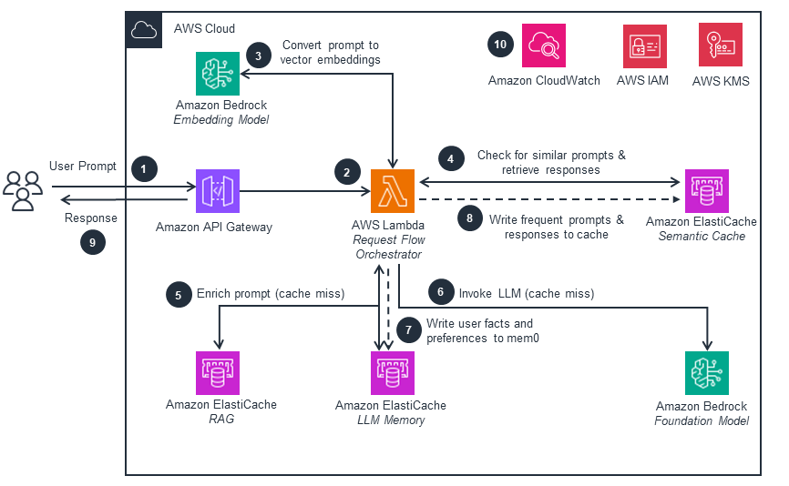
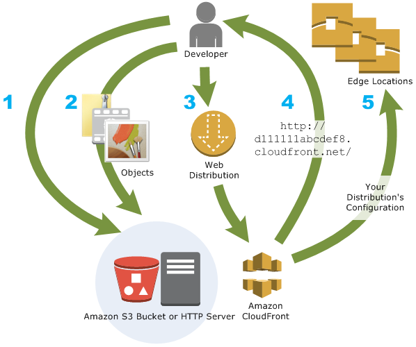
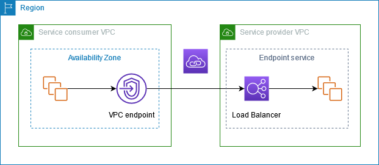
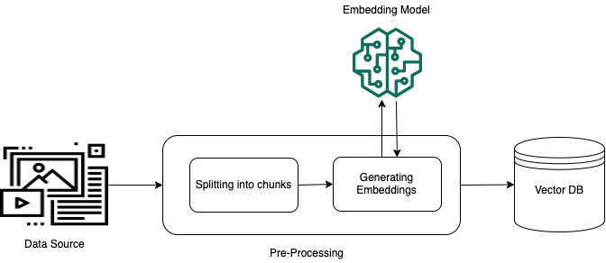
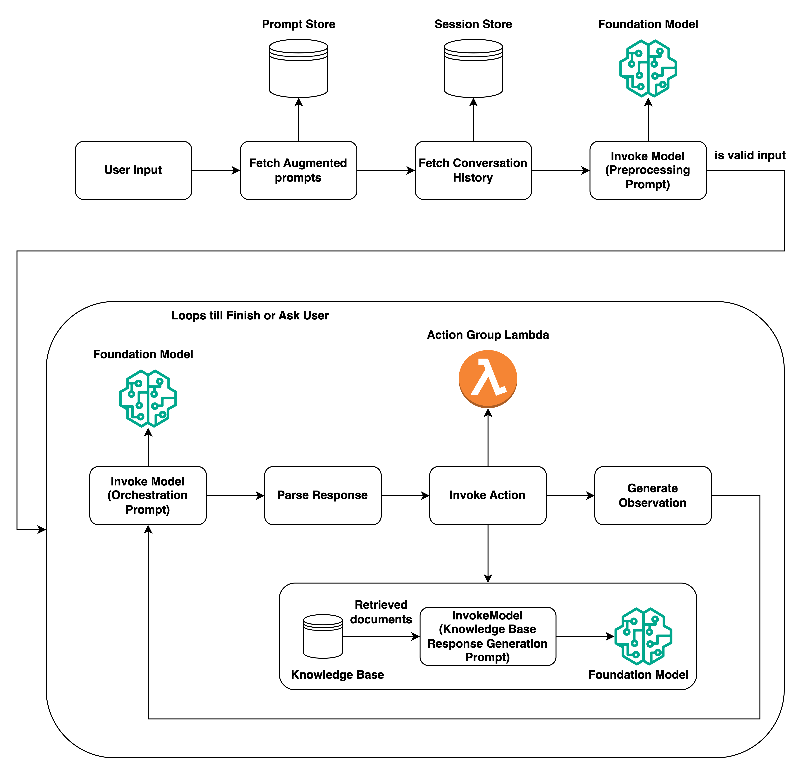
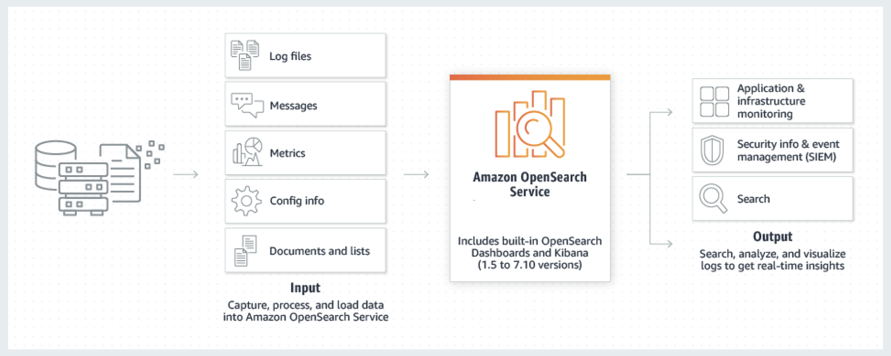

Domain 4: Operational Efficiency and Optimization for GenAI Applications
What this domain asks you to do
The exam guide lists the tasks and skills below. Each task has its own section in this module. Each skill has its own heading in that section.
Task 4.1: Implement cost optimization and resource efficiency strategies.
- Skill 4.1.1. Develop token efficiency systems to reduce FM costs while maintaining effectiveness (for example, by using token estimation and tracking, context window optimization, response size controls, prompt compression, context pruning, response limiting).
- Skill 4.1.2. Create cost-effective model selection frameworks (for example, by using cost-capability tradeoff evaluation, tiered FM usage based on query complexity, inference cost balancing against response quality, price-to-performance ratio measurement, efficient inference patterns).
- Skill 4.1.3. Develop high-performance FM systems to maximize resource utilization and throughput for GenAI workloads (for example, by using batching strategies, capacity planning, utilization monitoring, auto-scaling configurations, provisioned throughput optimization).
- Skill 4.1.4. Create intelligent caching systems to reduce costs and improve response times by avoiding unnecessary FM invocations (for example, by using semantic caching, result fingerprinting, edge caching, deterministic request hashing, prompt caching).
Task 4.2: Optimize application performance.
- Skill 4.2.1. Create responsive AI systems to address latency-cost tradeoffs and improve the user experience with FMs (for example, by using pre-computation to perform predictable queries, latency-optimized Amazon Bedrock models for time-sensitive applications, parallel requests for complex workflows, response streaming, performance benchmarking).
- Skill 4.2.2. Enhance retrieval performance to improve the relevance and speed of retrieved information for FM context augmentation (for example, by using index optimization, query preprocessing, hybrid search implementation with custom scoring).
- Skill 4.2.3. Implement FM throughput optimization to address the specific throughput challenges of GenAI workloads (for example, by using token processing optimization, batch inference strategies, concurrent model invocation management).
- Skill 4.2.4. Enhance FM performance to achieve optimal results for specific GenAI use cases (for example, by using model-specific parameter configurations, A/B testing to evaluate improvements, appropriate temperature and top-k/top-p selection based on requirements).
- Skill 4.2.5. Create efficient resource allocation systems specifically for FM workloads (for example, by using capacity planning for token processing requirements, utilization monitoring for prompt and completion patterns, auto-scaling configurations that are optimized for GenAI traffic patterns).
- Skill 4.2.6. Optimize FM system performance for GenAI workflows (for example, by using API call profiling for prompt-completion patterns, vector database query optimization for retrieval augmentation, latency reduction techniques specific to LLM inference, efficient service communication patterns).
Task 4.3: Implement monitoring systems for GenAI applications.
- Skill 4.3.1. Create holistic observability systems to provide complete visibility into FM application performance (for example, by using operational metrics, performance tracing, FM interaction tracing, business impact metrics with custom dashboards).
- Skill 4.3.2. Implement comprehensive GenAI monitoring systems to proactively identify issues and evaluate key performance indicators specific to FM implementations (for example, by using CloudWatch to track token usage; prompt effectiveness; hallucination rates; and response quality, anomaly detection for token burst patterns and response drift, Amazon Bedrock Model Invocation Logs to perform detailed request and response analysis, performance benchmarks, cost anomaly detection).
- Skill 4.3.3. Develop integrated observability solutions to provide actionable insights for FM applications (for example, by using operational metric dashboards, business impact visualizations, compliance monitoring, forensic traceability and audit logging, user interaction tracking, model behavior pattern tracking).
- Skill 4.3.4. Create tool performance frameworks to ensure optimal tool operation and utilization for FMs (for example, by using call pattern tracking, performance metric collection, tool calling observability and multi-agent coordination tracking, usage baselines for anomaly detection).
- Skill 4.3.5. Create vector store operational management systems to ensure optimal vector store operation and reliability for FM augmentation (for example, by using performance monitoring for vector databases, automated index optimization routines, data quality validation processes).
- Skill 4.3.6. Develop FM-specific troubleshooting frameworks to identify unique GenAI failure modes that are not present in traditional ML systems (for example, by using golden datasets to detect hallucinations, output diffing techniques to conduct response consistency analysis, reasoning path tracing to identify logical errors, specialized observability pipelines).
Source: https://docs.aws.amazon.com/aws-certification/latest/ai-professional-01/ai-professional-01-domain4.html
Task 4.1: Implement cost optimization and resource efficiency strategies.
After this section, you can choose the cost lever that fits a scenario, reject the levers that do not touch the real cost driver, and explain the trade between price, quality, and speed. The four skills cover token control, model choice, throughput and capacity, and caching. Most wrong options in this area change one lever and ignore the cost driver. Find the driver first, then pick the lever.
4.1.1"] N2 -->|Price or quality| N4["Model selection skill
4.1.2"] N2 -->|Steady or spiky| N5["Throughput skill 4.1.3"] N2 -->|Repeated input| N6["Caching skill 4.1.4"]
Figure: Name the cost driver first, then choose the skill whose lever touches that driver.
The deciding constraint
Start with the cost driver, not with the service names. Ask four questions in order. Each answer removes whole branches of options.
- Does a user wait for the answer, or can the work finish later?
- Is the token volume steady, or does it spike?
- Does the prompt repeat a large static block, or does the answer repeat?
- Is the traffic leaving the VPC through a NAT gateway, and how many gigabytes move each month?
The first question splits batch work from interactive work. The second question splits on-demand from provisioned capacity. The third question splits prompt caching from response caching. The fourth question decides whether the network path is part of the cost problem at all.
goal"] -->|Answer can wait
hours| B["Batch inference on S3
JSONL"] A -->|A user waits for the
reply| C["Interactive call path"] C -->|Long static prefix
repeats| D["Prompt caching with
checkpoints"] C -->|Same answer
requested again| E["Semantic or exact cache
layer"] C -->|Large inputs or long
outputs| F["Token budget and response
limits"] C -->|Steady volume| G["Provisioned Throughput"] C -->|Spiky volume| H["On-demand with quota
planning"] C -->|Easy and hard
queries mixed| I["Tiered model routing"] C -->|Large gigabyte
volume from VPC| J["Endpoint or NAT path
choice"]
Figure: The first split is whether a person waits. The later splits follow the cost driver named in the scenario.
Use these signal words to move down the tree.
- Rule: Words such as nightly, overnight, backlog, or by morning point to batch inference.
- Rule: Words such as live chat, typing, or agent waiting point to an interactive call.
- Rule: Words such as same policy text on every request point to prompt caching, not to a response cache.
- Rule: Words such as steady, reserved, or guaranteed capacity point to Provisioned Throughput.
- Rule: Words such as data processing charge, gigabytes through the gateway, or private subnet point to the network path.
- Exam tip: A cost problem that names a large bill but no volume is not solved by a network change. Read for the number that grows.
Skill 4.1.1: Develop token efficiency systems to reduce FM costs while maintaining effectiveness
This skill covers the cheapest levers first. You measure tokens before a call, you cap the output, and you remove text that does not help the answer. Token count drives both cost and quota use. The sections below cover token estimation and tracking, context window optimization, response size controls, prompt compression, context pruning, and response limiting.
call"] -->|Check the budget| N2["Cap output with max tokens"] N2 -->|Fits the budget| N3["Send the request"] N2 -->|Still too large| N4["Prune or compress the
input"] N4 -->|Keep exact facts| N3
Figure: Count and cap first, and prune the input only when the budget is still exceeded.
Token estimation and tracking
What it is. The CountTokens operation returns the input token count that an inference request would use, without running the model. The operation does not incur charges. Token counts depend on the model, because each model uses its own tokenizer.
Why it matters. You can estimate cost and check a prompt against a limit before you pay for the call. The same count feeds your budget checks and your quota planning.
CountTokens"] --> B["Add max tokens for output"] --> C["Check against token quota"] --> D["Log actual usage"]
Figure: A budget check runs before the call, and the logged usage closes the loop.
How to read usage. The runtime metrics in CloudWatch include InputTokenCount, OutputTokenCount, CacheReadInputTokenCount, and CacheWriteInputTokenCount. In a Converse response, the inputTokens field excludes cached tokens. The total input is inputTokens plus cacheReadInputTokens plus cacheWriteInputTokens.
Rule: Estimate with CountTokens when you need the cost before the call. Track actual usage from the response or CloudWatch when you need the cost after the call.
Trap: Estimating output from the maxTokens setting alone. The setting is a ceiling, not the expected output size. Track the real output count and compare it with the ceiling.
Trap: Using CountTokens on a Claude model that the bedrock-runtime endpoint does not support. The source says to use the count tokens operation on the bedrock-mantle endpoint for those models.
Pairs with. Response size controls, quota planning, and cost monitoring.
Limits. The source does not give a per-model tokenizer table. Counts can differ by model. The bedrock-mantle path uses a separate IAM action named with the bedrock-mantle prefix.
Context window optimization
What it is. Context window optimization means placing only the tokens the model needs in the request, in an order that also helps caching. Static content goes first, then variable content. Cache checkpoints process in the order tools, then system, then messages.
Rule: Put stable instructions and tool definitions before the variable user turn. This order keeps the cached prefix valid for longer.
Trap: Changing an early section, such as tool definitions, invalidates the cache for every later section. A small edit at the top can cancel the saving at the bottom.
Pairs with. Prompt caching, context pruning, and retrieval limits.
Limits. The source does not state a context size for each model in this section. Read the model card for the window size.
Response size controls
What it is. The maxTokens field in the Converse inference configuration sets the output ceiling. The max_tokens field plays the same role in model-native bodies. The stopSequences field tells the model where to end its output.
Quota effect. The quota system deducts the input count plus max_tokens when the request starts. At the end, it deducts the actual input and cache write counts plus the output count times the burndown rate. Cache reads do not count toward the quota.
Rule: Set max tokens to the expected output size plus a small margin. A tight value also raises the number of requests that fit in one minute.
Trap: Setting max tokens very high "to be safe." The source gives an example where a value of 32,000 reserved far more quota than the 1,000 output tokens used. Fewer requests then fit in the same minute.
Trap: Setting max tokens too low. The output stops early and the answer is cut. Test the value on the real answer length before you lower it in production.
Pairs with. Response limiting, token metrics, and the quota planning in Skill 4.1.3.
Limits. The source gives the burndown rate for each model family. Output tokens count five times for models version 4.7 and below, ten times for some newer Claude models, and fifteen times for version 4.8 models. Other models use one to one. Check the model card for the rate of the model you use.
Prompt compression
What it is. Prompt compression means rewriting the input so that it carries the same facts in fewer tokens. You shorten instructions, remove repeated text, and turn long history into a short summary. Course material names smaller models for summarization, compression, and classification tasks.
Rule: Compress with a smaller model when the job is summarizing or classifying, and check that the compressed text keeps the facts the final answer needs.
Trap: Compressing the policy text itself. A summary can drop a clause that changes the answer. Keep the source text for the facts that must be exact.
Pairs with. Context pruning, prompt caching, and the evaluation of answer quality.
Limits. The source gives no compression ratio. Measure the ratio on your own prompts. Not in source for a target ratio.
Context pruning
What it is. Context pruning removes parts of the prompt that no longer help the answer. Common targets are old chat turns, low-score retrieved chunks, and repeated examples. You keep the system instructions and the newest turns.
Rule: Prune by priority. Keep the instructions, the current question, and the top-ranked evidence. Drop the rest first.
Trap: Pruning the system instructions to save tokens. The saving is small, and the model then ignores the rules the application needs.
Pairs with. Token estimation before the call, so the pruning stops when the request fits the budget.
Limits. The source does not give a pruning threshold. Set the threshold from your evaluation results.
Response limiting
What it is. Response limiting combines a token ceiling, a stop sequence, and an instruction about answer length. The ceiling is the hard control. The instruction shapes the answer.
Rule: Use max tokens as the hard limit. Use the prompt only to ask for a short answer, not as the cost control.
Trap: Believing that "answer in 200 words" sets a token limit. A word count is not a token count. A word limit does not stop the output at a fixed cost.
Pairs with. Response size controls and streaming, which lets the user read the first words while the rest arrives.
Limits. The source does not give a conversion from words to tokens. Not in source for a fixed ratio.
Source: https://docs.aws.amazon.com/bedrock/latest/userguide/count-tokens.html, https://docs.aws.amazon.com/bedrock/latest/userguide/quotas-token-burndown.html, https://docs.aws.amazon.com/bedrock/latest/userguide/prompt-caching.html. Course slide extract, pages 21, 285, 286, and 288.
Skill 4.1.2: Create cost-effective model selection frameworks
This skill picks the cheapest model that still passes your quality bar. The decision needs three inputs: a test set, a cost per task, and a quality score. The sections below cover cost-capability tradeoff evaluation, tiered usage by query complexity, cost balancing against response quality, price-to-performance measurement, and efficient inference patterns.
Figure: The smallest model comes first, and a larger model is used only when the evaluation shows a real gap.
Cost-capability tradeoff evaluation
What it is. The tradeoff is the gap between what a larger model can do and what the task needs. Course material asks whether the largest and most expensive model is needed. It notes that the intelligence can sit in retrieval and tool use, so a smaller model may be enough.
Rule: Start with the smallest model in the shortlist. Move up only when the evaluation shows a quality gap that matters for the task.
Trap: Choosing the largest model because it scores highest on a public benchmark. The public score does not show how the model handles your prompts and your data.
Pairs with. Price-to-performance measurement and tiered routing.
Limits. The source does not give prices or quality thresholds here. Not in source for a numeric quality bar.
Tiered FM usage based on query complexity
What it is. Tiered usage sends simple queries to a small model and hard queries to a large model. Course material calls this dynamic routing or a router agent, and notes that Bedrock now offers it as intelligent prompt routing.
Intelligent prompt routing. The feature gives one serverless endpoint that picks between two models of one family. It predicts the response quality of each model for each request. Default routers use select Amazon Nova and Meta Llama models, depending on the Region. You can also configure your own router.
Rule: Use intelligent prompt routing when both candidate models are in the same family, the prompts are English, and the quality rule fits a fixed baseline.
Trap: Expecting the router to learn from your application metrics. The source says the router does not adjust decisions from application performance data.
Trap: Picking two models from different families. The console needs two models, and both must come from one family.
Application cascade. A cascade is code that tries the small model first, checks the result, and calls the large model only when the check fails. The check can be a schema test or a score from a classifier. You own the rules, so the cascade can use any models.
Rule: Use a cascade when you need models from different families, custom checks, or routing on fields that the router does not see.
family| B["Intelligent prompt routing"] A -->|Other models or
custom checks| C["Application cascade"] B -->|Fallback model sets
the baseline| D["Response quality
difference setting"] C -->|Your code scores the
output| E["Escalate on failed check"]
Figure: The router decides inside one family. A cascade decides in your own code.
Pairs with. Token budgets, caching of the small-model answers, and the evaluation set.
Limits. The source says the router is optimized for English prompts. The source does not state a separate fee for routing. Not in source for routing fees.
Inference cost balancing against response quality
What it is. Balancing means setting a rule that trades a small quality loss for a cost saving. In intelligent prompt routing, the fallback model is the anchor. The response quality difference setting says how much better another model must be before the router leaves the fallback.
Example reading. If the setting is 10 percent and the fallback is the smaller model, the router sends a request to the larger model only when the predicted quality of the larger model is more than 10 percent better.
Rule: Choose the cheapest model as the fallback when most requests are simple. Set the difference so that the larger model runs only on the requests that need it.
Trap: Choosing the larger model as the fallback. Then the router sends most traffic to the expensive path and the saving disappears.
Pairs with. Price-to-performance measurement and the test set from the first sub-section.
Limits. The router uses predicted quality, not measured quality. Check the outputs on your own test set before you set the production value.
Price-to-performance ratio measurement
What it is. The ratio compares the quality a model delivers on your task with the cost to deliver it. A simple form is quality score divided by cost per task. Course material names Bedrock Evaluations as a way to compare models on your prompt set, with human judges, LLM judges, or predefined metrics.
Figure: The ratio needs the same prompts for every candidate and the same cost basis.
Rule: Compare models only on the same prompt set, with the same output limit, and with cost per task, not cost per token alone.
Trap: Comparing price per million tokens from two different Regions or tiers. Compare the cost of finishing your task.
Pairs with. Token tracking from CloudWatch and cost allocation tags.
Limits. The source names Bedrock Evaluations but does not give a scoring formula. Not in source for a fixed formula.
Efficient inference patterns
What it is. Efficient patterns reduce the time and cost of each call without changing the model. Use one request shape for many models, stream the output, reuse the cached prefix, and use a faster serving option when the model supports it.
Converse API. Converse gives one request shape for models that support messages. Model-specific settings go in a separate field. The request carries messages, system text, an inference configuration, and optional tools and guardrails.
Rule: Use Converse when you may switch models later, because the same code path serves several models.
Streaming. ConverseStream returns output as it is generated. Course material measures time to first token for streaming calls, along with output tokens per second and end-to-end latency.
Rule: Stream when a person reads the answer as it arrives. Streaming does not lower the token cost.
Trap: Believing that streaming reduces the bill. Streaming changes how fast the first words appear. The token count stays the same.
Pairs with. Latency optimized inference, prompt caching, and cross-Region inference.
Limits. The source does not give a time-to-first-token target. Not in source for a numeric target.
Latency optimized inference
What it is. Latency optimized inference is a per-request setting named performanceConfig with a latency value. The value is standard or optimized. The default is standard. The source calls the feature a preview release that can change.
Quota behavior. After you reach the optimized-latency usage quota for a model, the service serves the request at standard latency and bills it at standard rates. The response and the CloudTrail log show which latency setting served the request. CloudWatch shows these requests under the model ID with a latency-optimized suffix.
Supported models in the source. The source lists Amazon Nova Pro, Anthropic Claude 3.5 Haiku, and Meta Llama 3.1 models. The source lists specific Regions for each model through cross-Region inference. Llama 3.1 405B serves requests up to 11,000 total tokens in the optimized mode.
Rule: Choose optimized latency for a supported model, in a supported Region, when the first words matter during live chat.
Trap: Assuming the setting works for any model. Check the model table and the Region table first.
Trap: Treating optimized latency as a cost saving. The source gives the premium pricing on the pricing page and does not state the premium in this section. Not in source for the premium.
Pairs with. Streaming and the CloudWatch metrics for latency.
Limits. Preview status. Not in source for the price difference.
Source: https://docs.aws.amazon.com/bedrock/latest/userguide/prompt-routing.html, https://docs.aws.amazon.com/bedrock/latest/userguide/latency-optimized-inference.html. Course slide extract, pages 286, 288, 289, and 295.
Skill 4.1.3: Develop high-performance FM systems to maximize resource utilization and throughput
This skill matches capacity to demand. You batch work that can wait, you size the quota to the token rate, you watch utilization, and you buy dedicated capacity only when the load is steady. The sections below cover batching strategies, capacity planning, utilization monitoring, auto-scaling configurations, and provisioned throughput optimization.
minute"] N3 -->|Quota is short| N4["Request a quota increase"] N3 -->|Load is steady| N5["Provisioned Throughput"]
Figure: Work that can wait leaves the real time path, and capacity follows the peak token rate.
Batching strategies
What it is. Batch inference submits many prompts in one job. The input is one or more JSONL files in Amazon S3. Each line holds a modelInput object and a recordId.
The output is written to an S3 location. The job uses the InvokeModel format by default, or the Converse format when you set the invocation type.
seconds| B["Real time calls with app
batching"] A -->|Answer can wait
hours| C["Batch inference job"] C -->|Records in JSONL on
S3| D["Output written to S3"] C -->|Tool calling needed| E["Use InvokeModel invocation
type"] B -->|Burst of requests| F["Queue with token aware
limits"]
Figure: Batch inference fits work that can wait. Real-time batching fits bursts that still need quick answers.
Rules from the source. Batch inference is not supported for provisioned models. Batch inference does not support tool calling when the job uses the Converse type, so records that include a toolConfig fail. Output order is not guaranteed to match the input order.
You can set a VPC configuration only through the API. Prompt caching is not supported with the batch API.
Rule: Use batch inference for overnight or backlog work that has no user waiting. Use the InvokeModel type if the records need tool calling.
Trap: Using batch inference for a chat feature because it is cheaper. A user cannot wait for a job that runs for hours.
Trap: Expecting prompt caching to cut the cost of batch records. The source says the batch API does not support prompt caching.
Application batching. Application batching groups small real-time requests into one call or into a short queue. Course material gives the example of batching embedding work for a vector store. Batching in the application changes latency and throughput, and it does not change the per-token price.
Limits. The source lists the quota names for minimum records, records per file, records per job, file size, and job size. The numeric values are on the quota page, and this section did not confirm them. Not in source for the numbers.
The source also gives no batch discount percentage in the pages read here. Not in source for a batch discount.
Capacity planning
What it is. Capacity planning turns a traffic forecast into a token quota. Course material says to work from tokens per minute and requests per minute, then request a quota increase or buy provisioned capacity when the quota is short. The quota is set at the model level, and it counts input plus output tokens.
Sizing rule. Estimate the peak tokens per minute with this sum: input tokens plus max tokens for each request in the busiest minute. Then add the output burndown for the models you use. The source gives an example where the start-of-request deduction exceeds the final deduction when the max tokens value is high.
Rule: Plan from peak tokens per minute and requests per minute together. Use the higher of the two limits as the constraint.
Trap: Planning only from requests per minute. A request with a large prompt and long output can exhaust the token quota while the request count stays low.
Trap: Planning from average traffic. Quota errors happen at the peak minute, not at the average.
Pairs with. Max tokens tuning, utilization monitoring, and provisioned throughput sizing.
Limits. The source gives a token quota in tokens per minute and tokens per day. The numeric quota for each model is not in this section. Not in source for the default quota.
Utilization monitoring
What it is. Utilization monitoring tracks how much of the quota and the capacity you use. The runtime metrics in CloudWatch show input tokens, output tokens, cache read tokens, and cache write tokens. The automatic dashboard for Bedrock shows token counts by model. Course material also lists invocation counts, throttles, server errors, client errors, and latency.
Rule: Watch throttles and the token metrics together. A rise in throttles with flat token counts points to a quota or burst problem, not to a demand rise.
Trap: Reading the input token metric as the full input cost. Cache reads are a separate metric, and the total input is the sum of the parts.
Cost attribution. Course material names Cost Explorer as the tool that attributes model cost to a business function. Use tags on the workload so the cost report splits by team.
Limits. The source names the metrics. Not in source for alarm thresholds.
Auto-scaling configurations
What it is. For SageMaker AI hosted models, auto scaling changes the instance count in response to load. Target tracking keeps a chosen metric near a target value. The predefined metric is invocations per instance.
Step scaling gives more control. Scheduled actions change capacity at set times.
invocations"] --> C["Cooldown limits flapping"] --> D["Minimum and maximum
instance count"]
Figure: Target tracking adds and removes instances. The cooldown and the limits keep the changes stable.
Settings from the source. The minimum instance count must be at least 1. The maximum must be at least the minimum. The default scale-in and scale-out cooldown is 300 seconds each. The source says step scaling is needed to scale out from zero active instances.
Rule: Use target tracking with invocations per instance for a steady hosted model. Use step scaling when you need scale-from-zero or custom steps.
Trap: Setting a very short cooldown on a spiky workload. Instances then add and remove in a loop.
Trap: Expecting on-demand Bedrock calls to have an instance count you set. On-demand calls use account quotas. Capacity for Bedrock comes from quota or from Provisioned Throughput.
Pairs with. Utilization monitoring and load tests on the scaling settings.
Limits. The source gives an example target of 70 invocations per instance. Not in source for an auto-scaling setting for on-demand Bedrock.
Provisioned throughput optimization
What it is. Provisioned Throughput buys a fixed level of model throughput, measured in model units. Each model unit sets the input and output tokens the model can process in one minute. You pay hourly until you delete the capacity.
Commitment choices are none, one month, or six months. Longer commitments give a lower hourly rate.
gaps| B["On-demand with quotas"] A -->|Steady high volume| C["Provisioned Throughput"] A -->|Custom model| C C -->|Hourly billing until
deleted| D["Commitment term sets the
rate"] B -->|Pay per token used| E["Quota limits the peak"]
Figure: Provisioned Throughput trades flexibility for a fixed rate. On-demand trades a fixed rate for flexibility.
Rules from the source. A customized model needs Provisioned Throughput or a custom model deployment for on-demand inference. With Provisioned Throughput, you pass the provisioned model ARN as the model ID when you call it. Inference profiles do not support Provisioned Throughput. Batch inference is not supported for provisioned models.
Rule: Buy Provisioned Throughput when the load is steady and high, and the commitment term fits the expected life of the workload.
Trap: Buying capacity for the peak load and leaving it idle the rest of the day. A cross-Region profile does not help that idle capacity.
Trap: Combining Provisioned Throughput with a cross-Region inference profile. The source says that inference profiles do not support it.
Pairs with. Capacity planning and utilization monitoring.
Limits. The price per model unit is not in the source. Contact the account manager for the price. Not in source for the model unit throughput numbers.
Source: https://docs.aws.amazon.com/bedrock/latest/userguide/batch-inference.html, https://docs.aws.amazon.com/bedrock/latest/userguide/batch-inference-create.html, https://docs.aws.amazon.com/bedrock/latest/userguide/batch-inference-data.html, https://docs.aws.amazon.com/bedrock/latest/userguide/prov-throughput.html, https://docs.aws.amazon.com/bedrock/latest/userguide/quotas-token-burndown.html, https://docs.aws.amazon.com/sagemaker/latest/dg/endpoint-auto-scaling.html, https://docs.aws.amazon.com/sagemaker/latest/dg/endpoint-auto-scaling-policy.html. Course slide extract, pages 286, 290, 291, and 304.
Skill 4.1.4: Create intelligent caching systems to reduce costs and improve response times
Caching avoids paying for work that was already done. There are two kinds of savings. Prompt caching reduces the cost of a repeated input prefix, but the model still runs. A response cache skips the model call entirely. The sections below cover prompt caching, semantic caching, result fingerprinting, deterministic request hashing, and edge caching.
Figure: Prompt caching lowers the cost of a repeated prefix, while a response cache skips the model call.
Prompt caching
What it is. Prompt caching reuses a stable prompt prefix. Implicit caching is automatic and best effort. Explicit caching uses cache checkpoints that you place after the static content.
A cache read is billed at the cache-read rate. A cache write can be billed above the standard input rate, depending on the model.
Checkpoint limits. The minimum tokens per checkpoint depends on the model. The source lists values from 512 to 4,096 tokens. For example, one Claude family listed in the table has a 4,096 minimum, and another has a 1,024 minimum.
Claude models allow up to four checkpoints per request. The default time to live is 5 minutes, and some models also accept a 1-hour value.
Rules for the TTL. A cache hit resets the time to live. For models that support only the 5-minute value, a ttl field can cause a validation error. With the simplified management mode, one checkpoint at the end of the static block lets the service look back about 20 content blocks for a match.
Usage fields. The Converse response reports cacheReadInputTokens and cacheWriteInputTokens. A cache hit does not count against the input rate limit for Anthropic models, according to the source.
Rule: Use prompt caching when the same long prefix appears on many calls within the TTL window, and when the call runs on demand, not in batch.
Trap: Placing a checkpoint before the minimum is reached. The call succeeds, but the prefix is not cached.
Trap: Putting a changing timestamp or user name at the top. Every call then misses the cache.
Trap: Assuming a hit is guaranteed. The source says support does not guarantee a hit, so check the usage fields.
Semantic caching
What it is. Semantic caching stores the embedding of a prompt together with the response. For a new prompt, the application creates an embedding, searches the cache for near neighbors, and returns the stored answer when the similarity is above a threshold. On a miss, the model runs and the new answer is stored.
in prompt| B["Prompt caching checkpoint"] A -->|Similar questions
with different words| C["Semantic cache with
threshold"] A -->|Identical request
every time| D["Deterministic request hash
key"] A -->|Public identical GET
responses| E["Edge cache with CloudFront"] C -->|Hit returns stored
answer| F["No model call"] D -->|Key includes model
and settings| F
Figure: Only the semantic and exact-hash paths skip the model call. Prompt caching still runs the model.
The reference architecture in the AWS solution guidance follows this path. A user prompt reaches an API, a Lambda function creates an embedding with a Bedrock embedding model, and the function checks an ElastiCache for Valkey cache. A miss sends the prompt to a Bedrock foundation model, and the function writes the answer to the cache. The same guidance also shows separate stores for retrieval and memory. The figure below shows that flow.

Read the flow from left to right. The prompt enters through the API, then the orchestrator creates an embedding. The cache lookup is the decision point, because a hit returns the stored answer. On a miss, the orchestrator sends the prompt to the foundation model and writes the new pair to the cache.
Rule: Use semantic caching for common questions that users phrase in different ways, when the correct answer does not depend on the user or the session.
Trap: Setting the threshold too low. Two questions with different answers can match, and the cache returns the wrong one. Tune the threshold on a labeled set of pairs.
Trap: Caching personal answers, such as account balances. The cached answer belongs to another user.
Trap: Ignoring the overhead. An embedding call and a cache search cost time and money on every request. Course material warns that the overhead must not outweigh the benefit.
Limits. Course material names ElastiCache for Valkey and MemoryDB as the in-memory stores, and notes that OpenSearch can also serve. Not in source for a numeric threshold.
Result fingerprinting
What it is. A result fingerprint is a hash of the inputs that decide the output. The inputs include the model ID, the final prompt text, the inference settings, the tool definitions, and any guardrail version. You store the answer with its fingerprint, and you reuse the answer only when the new fingerprint matches. Course material says results can be fingerprinted based on model configuration values.
Rule: Include every input that changes the output in the fingerprint. Leave out values that change for each request and do not change the answer.
Trap: Leaving out the model ID or the temperature. A new model or new settings then return an old answer.
Trap: Including a request ID or a timestamp. The fingerprint changes on every call, so nothing is reused.
Limits. The source does not give a fingerprint format. Not in source for a standard hash function or a field list.
Deterministic request hashing
What it is. A deterministic request hash turns a request into the same key every time it is the same request. Sort the keys in the JSON, remove volatile fields, normalize whitespace, and hash the result. Course material says a deterministic hash can be placed in a GET request path so an edge cache can serve it.
Rule: Use exact request hashing when the same request repeats, such as a fixed report prompt, and when a stored answer is acceptable for each repeat.
Trap: Expecting a hit when the output is meant to vary. With a non-zero temperature, the same key can return one of many valid answers. Decide whether the stored answer is acceptable before you cache it.
Trap: Hashing the raw request with a different field order. The hash changes even though the request means the same thing.
Limits. Not in source for a hash algorithm or key length.
Edge caching
What it is. Edge caching keeps a copy of a response at CloudFront edge locations near the viewer. With no cache policy, the default time to live is 24 hours. The origin can set Cache-Control max-age or an Expires header per object. The Cache-Control max-age value wins over Expires when both are set.

The diagram shows the path that edge caching uses. The origin holds the content, the distribution points viewers to edge locations, and the edge locations serve copies. A cache miss at an edge location goes back to the origin. A cached copy serves many viewers, so the saving depends on how many viewers ask for the same object.
Stale content settings. The stale-while-revalidate and stale-if-error directives let CloudFront serve old content while it refreshes, or during an origin error. Both are capped by the maximum TTL.
Rule: Edge cache only content that is public and identical for every viewer, and set the TTL to the freshness the content needs.
Trap: Edge caching a response that depends on the user, a session token, or an account. Another viewer can receive it.
Trap: Keeping the 24-hour default for content that changes often. Users then see old answers.
Limits. The TTL page does not state which HTTP methods CloudFront caches. Not in source for POST caching. Check the cache behavior page before you place a model call behind a cache key in a POST request.
Source: https://docs.aws.amazon.com/solutions/semantic-caching-for-generative-ai-applications-using-amazon-elasticache-for-valkey/, https://docs.aws.amazon.com/AmazonCloudFront/latest/DeveloperGuide/Introduction.html, https://docs.aws.amazon.com/AmazonCloudFront/latest/DeveloperGuide/Expiration.html, https://docs.aws.amazon.com/bedrock/latest/userguide/prompt-caching.html. Course slide extract, pages 292, 293, and 294.
Network cost in the request path
Network charges can be a hidden part of the model bill. A workload in a private subnet reaches Bedrock through a NAT gateway or through an interface endpoint. Each path has its own charge. Cross-Region routing also adds a question about where the traffic goes. This section compares the paths on cost and scope.
processed"] N3 -->|Charged| N5["Hourly per zone plus per
GB"] N1 -->|Cross Region| N6["Where the traffic goes"]
Figure: Each network path has its own charge, and cross Region routing adds a separate question.

The diagram shows the path that a private workload takes to reach a public endpoint. Traffic from the private subnet goes to the NAT gateway, then to the internet gateway. Every gigabyte through that gateway is metered. The model traffic is part of that metered traffic when the call uses the public endpoint.
NAT gateway data processing charges
What it is. A NAT gateway lets instances in private subnets connect to services outside the VPC, while outside services cannot start a connection to those instances. The source gives an example rate in US East Ohio of 0.045 US dollars per hour for each gateway, and 0.045 US dollars per gigabyte processed. The Regional NAT gateway option charges the hourly rate per Availability Zone.
Same-Region services. The source states that the data processing charge applies to traffic to AWS services in the same Region when that traffic goes through the NAT gateway. A gateway endpoint for S3 or DynamoDB avoids the processing and hourly charges.
Trap: Believing that a Region match removes the NAT charge. The processing charge applies to gigabytes through the gateway, whatever the destination.
Rule: When a private subnet sends large model payloads through a NAT gateway, count the gigabytes and the hours. The processing charge grows with the payload.
Limits. The N. Virginia NAT rates are not in the source pages read here. Not in source for N.
Virginia rates. The Ohio rates are a source example, not a quote for every Region.
Interface VPC endpoints for Amazon Bedrock
What it is. An interface endpoint uses AWS PrivateLink to create a private connection from the VPC to Bedrock. The endpoint creates a network interface in each enabled subnet. The Bedrock endpoint types listed in the source include bedrock, bedrock-runtime, bedrock-mantle, bedrock-agent, and bedrock-agent-runtime.
Private DNS. With private DNS enabled, the standard Regional name resolves to the endpoint, and the code does not change. Without private DNS, you pass the endpoint URL to the client.
Charges. The source bills an interface endpoint for each hour it stays provisioned in each Availability Zone. A source example shows 0.01 US dollars per hour for each endpoint network interface in US East N. Virginia. The processing charge tiers start at 0.01 US dollars per gigabyte for the first tier.
Rule: Use an interface endpoint when the workload sends steady high volume from private subnets and the endpoint hourly cost is small compared with the processing saving.
Trap: Assuming a gateway endpoint covers Bedrock. The Bedrock endpoint list in the source contains interface endpoints only.
Trap: Forgetting the hourly charge in each Availability Zone. Two zones double the hourly part.
Policy. The default endpoint policy allows full access to Bedrock through the endpoint. A custom endpoint policy can limit the actions and principals.
Limits. The source does not state whether the endpoint covers the cross-Region routing hop. Not in source. Test the path with the real profile before you rely on it.
Cross-Region traffic and inference profiles
What it is. A cross-Region inference profile routes a request to another Region that serves the model. A geographic profile stays inside one geography, for example the US, the EU, or APAC. A global profile can route to any supported commercial Region.
Charges and path. The source states that there is no added routing charge for cross-Region inference. The price follows the Region from which you call the profile. Traffic between Regions stays on the AWS network and is encrypted in transit. CloudTrail records the source Region and an inference Region field.
Price difference. The docs table lists standard pricing for geographic profiles and approximately 10 percent savings for global profiles.
Trap: Choosing a global profile to lower the NAT charge. The profile changes where the model runs. It does not change the VPC path that carries your payload.
Trap: Forgetting that an organization SCP can block a Region in the profile. The calls then fail. Allow every Region in the profile, or leave the Region condition unspecified.
Rule: Use a geographic profile when a residency rule names a geography. Use a global profile when any commercial Region is acceptable and the saving matters.
Limits. Not in source for cross-Region data transfer rates between your own Regions.
Comparing the network paths
This yes or no matrix shows which path supports which charge. The rate values are in the text above.
| Path | Bedrock calls supported | Per GB processing charge | Hourly charge |
|---|---|---|---|
| NAT gateway | Yes | Yes | Yes |
| Interface VPC endpoint | Yes | Yes | Yes |
| Gateway VPC endpoint | No | No | No |
Worked arithmetic. Assume 1,000 gigabytes of model payload each month, and 730 hours in the month. The NAT gateway example rate gives 0.045 times 730, which is about 32.85 US dollars for hours, plus 0.045 times 1,000, which is 45.00 US dollars for processing. The total is about 77.85 US dollars for one gateway.
An interface endpoint at the example rate of 0.01 per hour gives about 7.30 US dollars per network interface, or about 14.60 US dollars for two zones. Its processing at 0.01 per gigabyte gives 10.00 US dollars. The total is about 24.60 US dollars.
Trap: Comparing the two totals as if they came from one Region. The NAT rates are the Ohio example, and the endpoint rate is the N. Virginia example. Treat the result as an estimate, and recheck the rates in your Region.
Trap: Removing the NAT gateway from a shared subnet. Other workloads still need it, so the saving is only the model share.
Rule: Compare the monthly gigabytes that the model calls send through the path. The path with the smaller total for that volume is the cheaper one.
Source: https://docs.aws.amazon.com/vpc/latest/userguide/vpc-nat-gateway.html, https://aws.amazon.com/vpc/pricing/, https://docs.aws.amazon.com/bedrock/latest/userguide/vpc-interface-endpoints.html, https://aws.amazon.com/privatelink/pricing/, https://docs.aws.amazon.com/bedrock/latest/userguide/cross-region-inference.html, https://docs.aws.amazon.com/vpc/latest/privatelink/concepts.html, https://docs.aws.amazon.com/bedrock/latest/userguide/prompt-caching.html. Course slide extract, pages 304 and 305.

The figure shows the endpoint as the entry point inside the consumer VPC. The request stays inside the AWS network and reaches the service through the endpoint. The consumer never needs an internet gateway or a NAT device for that path. Use the same picture to check whether a workload still needs a NAT gateway for other traffic.
Versus pairs in this task
Each pair below is a confusable choice. Read the scenario, use the one question, then reject the other option with the trap.
scenario"] -->|Read scenario| N2["Find the constraint"] N2 -->|Ask one question| N3["The one question decides"] N3 -->|Matches| N4["Keep that option"] N3 -->|Does not match| N5["Reject it with the trap"]
Figure: One question decides each pair, and the trap explains why the other option fails.
Prompt caching versus semantic caching
in each call| B["Prompt caching"] A -->|Whole answer repeats
by meaning| C["Semantic cache"] B -->|Model still runs| D["Output tokens still billed"] C -->|Hit skips model call| E["No inference cost on hit"]
Figure: Prompt caching lowers the input cost. A semantic cache can remove the whole call.
- Purpose. Prompt caching reuses a prefix. A semantic cache reuses an answer.
- Input. Prompt caching needs a stable prefix with checkpoints. A semantic cache needs an embedding and a threshold.
- Effect. Prompt caching cuts the input cost and still runs the model. A semantic cache on a hit skips the model call.
Exam tip: Ask whether the model still needs to run. If the question says the answer must be new each time, prompt caching is the only option that fits.
Trap: Choosing a semantic cache for a long system prompt that is the same on every call. The prompt is not a question, so the prefix match is the right tool.
Batch inference versus on-demand calls
call"] A -->|No| C["Batch inference job"] C -->|Records in JSONL| D["Output file with recordId"] B -->|Billed per request
as it runs| E["Quota applies per minute"]
Figure: Batch fits when no caller waits. The on-demand path fits when a caller waits.
- Purpose. Batch inference processes many prompts in one job. An on-demand call answers one request at once.
- Input. Batch reads JSONL files in S3. An on-demand call reads one request body.
- Effect. Batch writes results to S3, and the order can change. An on-demand call returns the answer to the caller.
Exam tip: The word overnight or backlog points to batch. The word user or chat points to on-demand.
Trap: Choosing batch for a feature that needs tool calls when the job uses the Converse type. Use the InvokeModel type for those records.
On-demand versus Provisioned Throughput
gaps| B["On-demand with quotas"] A -->|Steady high volume| C["Provisioned Throughput"] A -->|Custom model| C C -->|Hourly billing until
deleted| D["Commitment term sets the
rate"] B -->|Pay per token used| E["Quota limits the peak"]
Figure: Provisioned Throughput is a fixed rate for a fixed capacity. On-demand is metered use under a quota.
- Purpose. On-demand uses the account quota. Provisioned Throughput reserves model units.
- Input. On-demand needs a quota that fits the peak. Provisioned needs a forecast of steady tokens per minute and a term choice.
- Effect. On-demand bills tokens used, under a limit. Provisioned bills hours, whether or not the capacity is used.
Exam tip: A custom model narrows the answer to Provisioned Throughput or a custom model deployment. Steady high volume points to Provisioned Throughput. Spiky use with a supported base model points to the on-demand deployment.
Trap: Buying Provisioned Throughput for a spiky workload to avoid throttling. Idle hours still bill, and the quota request is often the cheaper fix.
Geographic versus global cross-Region profile
a geography| B["Geographic profile"] A -->|Residency allows any
commercial Region| C["Global profile"] B -->|Routes only inside
the geography| D["Smaller set of Regions"] C -->|Routes across
commercial Regions| E["Documented savings about
10 percent"]
Figure: The residency rule decides the profile. The saving is a secondary check.
- Purpose. A geographic profile keeps routing in a geography. A global profile routes anywhere in the commercial Regions.
- Input. A geographic profile needs a residency rule. A global profile needs an SCP that allows the target Regions.
- Effect. A geographic profile has standard pricing. A global profile has about 10 percent savings in the docs table.
Exam tip: Look for the words residency, jurisdiction, or stay in the country. Those words end the comparison.
Trap: Picking a global profile when the scenario names a legal boundary. The saving does not matter if the rule is broken.
NAT gateway versus interface VPC endpoint
Bedrock"] -->|No endpoint created| B["NAT gateway to public
endpoint"] A -->|Endpoint with
private DNS| C["Interface VPC endpoint"] B -->|Charged per GB
processed| D["Higher per GB rate in
example"] C -->|Charged per hour and
per GB| E["Lower per GB rate in
example"]
Figure: The NAT path charges for the gateway and the gigabytes. The endpoint path charges for each zone and the gigabytes.
- Purpose. A NAT gateway gives outbound internet access. An interface endpoint gives a private path to one AWS service.
- Input. A NAT gateway needs a public subnet and a route. An endpoint needs subnets and, optionally, private DNS.
- Effect. The NAT path charges processing on all gigabytes. The endpoint path charges hourly per zone and processing per gigabyte.
Exam tip: When the question asks about only Bedrock traffic and a large monthly volume, compare the two totals. When it asks about general internet access, the NAT gateway is the answer.
Trap: Choosing an endpoint when the workload also needs internet access for other services. The endpoint does not replace the internet path.
Intelligent prompt routing versus application cascade
family| B["Intelligent prompt routing"] A -->|Other models or
custom checks| C["Application cascade"] B -->|Fallback model sets
the baseline| D["Response quality
difference setting"] C -->|Your code scores the
output| E["Escalate on failed check"]
Figure: The router is managed and limited to one family. The cascade is custom code with any models.
- Purpose. The router picks one of two models for each request. A cascade tries a small model, then escalates after a check.
- Input. The router needs two models from one family and a quality difference. The cascade needs a check function.
- Effect. The router avoids custom code and works only in its supported setup. The cascade costs more code and can use any model.
Exam tip: If the scenario says different providers or a custom rule, the router is out. If it says one family and English only, the router fits.
Trap: Expecting the router to use your business metrics. The source says it does not adjust routing from application performance data.
Read a long question
Each scenario below is written for this section. Read the constraint words first. Then reject each option type with one reason.
Figure: The constraint words come first, and each wrong option type needs one reason.
Scenario 1: A chat assistant with a long fixed policy
A support team runs a live chat assistant for agents. Every call sends the same 6,000-token policy block before the question. Agents report slow first words and a rising bill.
Constraint words. live chat, same policy block, slow first words.
- Trap: Batch inference. The agents wait for the reply, so the job is too slow.
- Trap: A semantic cache over the whole prompt. Each question differs, so the cache rarely hits, and the policy block is still sent.
- Trap: Provisioned Throughput for steady volume. The source does not say the volume is steady, and the fix is the repeated prefix.
Answer. Use prompt caching with a checkpoint after the static policy block. Keep the question at the end. The first words come faster when the prefix is served from cache, and the input cost drops for each hit.
Scenario 2: A nightly summary job over file records
A research firm summarizes two million records stored as files each night. No person waits for each record. The output must exist by the start of the business day.
Constraint words. nightly, no person waits, by the start of the day.
- Trap: Many real-time calls from a fleet of workers. This path hits quota limits and needs a queue, and the work does not need a live answer.
- Trap: Provisioned Throughput for the whole night. Idle hours bill, and the workload is not steady during the day.
- Trap: Semantic caching. Each record is different, so a cache hit is unlikely.
Answer. Use batch inference with JSONL input and S3 output. Keep the input in the InvokeModel or Converse format that the job needs. The output file holds one line per record, and the order can differ from the input.
Scenario 3: A private workload with a high network bill
A workload runs in private subnets and calls Bedrock for about 5 terabytes of payloads each month. The bill shows a large NAT gateway charge. The team proposes moving to a global inference profile to cut the cost.
Constraint words. private subnets, NAT gateway charge, 5 terabytes.
- Trap: The global profile. The profile changes where the model runs, and the NAT charge applies to the gigabytes that move through the gateway.
- Trap: A smaller model. The model price is not the driver shown by the bill.
- Trap: A gateway endpoint. The source lists only interface endpoints for Bedrock.
Answer. Compare the NAT path with an interface endpoint for the Bedrock calls, using the monthly gigabytes and the hours in each zone. Keep the NAT gateway if other traffic uses it. Test that the endpoint covers the calls the workload makes.
Distractor patterns seen in this task
The wrong options in this area follow a few patterns. Learn the pattern, and you can reject an option without checking each detail.
- The raised ceiling. The option raises max tokens or the concurrency limit to avoid errors. Higher ceilings reserve more quota at the start of each request, so throughput can fall.
- The wrong layer. The option changes the network, the Region, or the instance count to fix a token cost. The token cost sits in the model calls, so change the calls.
- The cache for everything. The option caches all responses. Personal, changing, or user-specific answers must not be served to another user.
- The bigger model. The option moves to a larger model to improve cost or speed. A larger model usually costs more per token and does not fix a repeated prefix.
- The reserved capacity for spikes. The option buys Provisioned Throughput for a bursty load. The hourly bill continues in quiet hours.
- The request count only. The option sizes capacity from requests per minute alone. A request with a long prompt and output can exhaust the token quota first.
- The word limit as a cost control. The option asks for a short answer in words and calls it a cost limit. Only the token ceiling limits cost.
- The timestamp in the key. The option adds a time value to a cache key or a fingerprint. Nothing repeats, so the cache has no hits.
- The unsupported combination. The option pairs Provisioned Throughput with a cross-Region profile, or batch with prompt caching. The source says these combinations do not work.
- The unsupported family or language. The option routes between models from different families, or sends non-English prompts to the router. The router works in one family and is optimized for English.
trap"] N1 -->|Counts requests| N6["Request count trap"]
Figure: Each wrong option fits one named pattern, so identify the pattern before reading the details.
Drill
Read each prompt, cover the answer, then check the answer on the next line.
Figure: Say the answer before you check the rule or trap on the next line.
1. A workload sends the same 10,000-token instruction set on every call, and the calls are live. Which lever first?
Rule: Prompt caching with a checkpoint after the static instructions.
2. A team wants to answer the same common question phrased many ways, and the answer is public. Which cache?
Rule: A semantic cache with a tuned similarity threshold.
3. A nightly job must summarize files on S3 and no user waits. Which invocation path?
Rule: Batch inference with JSONL input and S3 output.
4. A custom fine-tuned model needs capacity at all times. What must you buy?
Rule: Provisioned Throughput, because the custom model has steady volume. A custom model deployment fits spiky use when the base model supports it.
5. A residency rule keeps processing in one geography. Which profile?
Rule: A geographic cross-Region inference profile.
6. A team sets a global profile to cut the NAT gateway bill. Is this the right fix?
Trap: No. The profile changes the model Region, not the VPC path, so the NAT processing charge stays.
7. A request sets max tokens to 32,000 but uses about 1,000 output tokens. What is wrong?
Trap: The high ceiling reserves quota at the start, so fewer requests fit each minute.
8. A team plans capacity from requests per minute only. What is the risk?
Trap: Long prompts and long outputs can exhaust the token quota at a low request count.
9. A router should choose between a model from one family and a model from another family. Is the router the right tool?
Trap: No. The router works between two models in the same family, so a cascade fits.
10. A developer wants to edge cache a response that includes the user name. Is this safe?
Trap: No. Edge caching serves identical copies, and a user-specific response would reach other viewers.
11. A team wants a cheaper call for a long prompt and the answer must be new each time. Which option fits?
Rule: Prompt caching, because it lowers the input cost and still runs the model.
12. A private workload needs Bedrock calls and no other internet access. Which network choice is the first candidate?
Rule: An interface VPC endpoint with private DNS, after comparing the monthly gigabytes with the NAT path.
Sources
- https://docs.aws.amazon.com/bedrock/latest/userguide/prompt-caching.html
- https://docs.aws.amazon.com/bedrock/latest/userguide/cross-region-inference.html
- https://docs.aws.amazon.com/bedrock/latest/userguide/quotas-token-burndown.html
- https://docs.aws.amazon.com/bedrock/latest/userguide/count-tokens.html
- https://docs.aws.amazon.com/bedrock/latest/userguide/batch-inference.html
- https://docs.aws.amazon.com/bedrock/latest/userguide/batch-inference-create.html
- https://docs.aws.amazon.com/bedrock/latest/userguide/batch-inference-data.html
- https://docs.aws.amazon.com/bedrock/latest/userguide/prov-throughput.html
- https://docs.aws.amazon.com/bedrock/latest/userguide/prompt-routing.html
- https://docs.aws.amazon.com/bedrock/latest/userguide/latency-optimized-inference.html
- https://docs.aws.amazon.com/bedrock/latest/userguide/vpc-interface-endpoints.html
- https://docs.aws.amazon.com/vpc/latest/userguide/vpc-nat-gateway.html
- https://docs.aws.amazon.com/vpc/latest/userguide/nat-gateway-scenarios.html
- https://docs.aws.amazon.com/vpc/latest/privatelink/concepts.html
- https://aws.amazon.com/vpc/pricing/
- https://aws.amazon.com/privatelink/pricing/
- https://docs.aws.amazon.com/sagemaker/latest/dg/endpoint-auto-scaling.html
- https://docs.aws.amazon.com/sagemaker/latest/dg/endpoint-auto-scaling-policy.html
- https://docs.aws.amazon.com/solutions/semantic-caching-for-generative-ai-applications-using-amazon-elasticache-for-valkey/
- https://docs.aws.amazon.com/AmazonCloudFront/latest/DeveloperGuide/Introduction.html
- https://docs.aws.amazon.com/AmazonCloudFront/latest/DeveloperGuide/Expiration.html
- Course slide extract, pages 21, 285, 286, 288, 289, 290, 291, 292, 293, 294, 295, 304, and 305 (second source of facts for this section)
Figure: The sources group into Bedrock, network, pricing, other AWS, and course slide pages.
Task 4.2: Optimize application performance
After this section, you can match a performance symptom to the layer that causes it. You can choose a latency tool, a cost tool, or a capacity tool from the wording of a scenario. You can also reject options that fix the wrong layer, such as adding capacity to a delay that comes from the network.
scenario"] -->|Find the layer| N2["Layer that causes it"] N2 -->|Latency| N3["Latency tool"] N2 -->|Cost| N4["Cost tool"] N2 -->|Capacity| N5["Capacity tool"] N2 -->|Network delay| N6["Network fix not more
capacity"]
Figure: Match the symptom to its layer first, then pick the tool for that layer.
The deciding constraint
Start from the scenario, not from the service names. Ask what the scenario measures first. A delay before the first word, a total wait, a monthly bill, and a throttle error each point to a different fix. The tree below moves from the symptom to the feature that fixes it.
cheaper GenAI"] -->|User waits for each
reply| B["Interactive path"] A -->|No user waits and
data sits in S3| C["Offline batch path"] A -->|Same prompt or
answer repeats| D["Reuse path"] A -->|Retrieval returns
weak or slow context| E["Retrieval path"] A -->|Quota or throttle
errors appear| F["Capacity path"] B -->|Text must appear
while generating| G["Streaming APIs"] B -->|Same model must stay
and speed matters| H["Latency optimized per
request"] D -->|Same prefix repeats| I["Prompt caching"] D -->|Same answer for many
users| J["Precomputed or semantic
cache"] E -->|Exact terms missed| K["Hybrid search and
reranking"] F -->|Steady load all day| L["Provisioned or Reserved
capacity"] F -->|Spiky load| M["On-demand with token
budgets"]
Figure: The first split is whether a person waits, and the second is what repeats or what fails.
Use these signal words to move down the tree. Each signal word points to one branch.
- Rule: Words such as chat, typing, or live agent point to the interactive path.
- Rule: Words such as overnight, backlog, or by morning point to batch inference.
- Rule: Words such as first words, slow start, or typing indicator point to streaming.
- Rule: Words such as steady, all day, or reserved point to Provisioned or Reserved capacity.
- Rule: Words such as spike, sale, or unpredictable point to on-demand with token budgets.
- Rule: Words such as same question, repeated, or nightly refresh point to a reuse path.
- Rule: Words such as exact code, product number, or rare term point to hybrid search.
Exam tip: Read the time window and the user type before you read the options. The word steady supports reserved capacity, and the word nightly supports batch.
Skills and techniques in scope
This section covers six skills. Each skill has its own heading. Each named technique under a skill has its own subheading, with the same five parts: what it is, when to choose it, when not to choose it, what it pairs with, and its limits.
Figure: Each named technique has the same five parts under its own subheading.
Skill 4.2.1: Responsive AI systems for latency and cost
This skill asks you to trade latency against cost and to keep the interface responsive. The levers are pre-computation, faster model variants, parallel work, streaming, and benchmarks. Each lever changes a different number, so name the number first.
Figure: The number named in the scenario decides which lever to choose from this skill.
Pre-computation for predictable queries
What it is. Pre-computation runs the model before a user asks. The application stores the answer and returns it on a later request. The Sundog course slides list caching and pre-computing predictable queries as a responsiveness pattern.
Rule: Pre-compute when the question set is known, the answer changes on a schedule, and every user gets the same answer.
Trap: Pre-computed answers for personal or account-specific questions return the wrong data to the wrong user.
Pairs with. A scheduled refresh job, a fast key-value lookup, and an expiry time on each stored answer.
Limits. Storage size and refresh cost depend on the workload. Not in source.
Source: Sundog slides page 295 and page 292
Latency-optimized Amazon Bedrock models
What it is. You set performanceConfig with latency set to optimized on a runtime call. The default is standard. AWS documents this feature as a preview. The same model serves the request, and no fine-tuning or new endpoint is needed.
Rule: Use optimized latency for an interactive call on a supported model and Region, and keep background calls on standard.
Trap: Optimized latency is not extra capacity. When the optimized quota runs out, Bedrock serves the request at standard latency and charges standard rates.
Pairs with. Streaming for early text, and cross-Region inference profiles where the model table lists them.
Limits. The docs list Amazon Nova Pro, Anthropic Claude 3.5 Haiku, and two Meta Llama 3.1 models. The Llama 405B model accepts up to 11K total tokens in this mode. The served setting appears in the response and in CloudTrail. Current model list after the fetch date: Not in source.
Source: https://docs.aws.amazon.com/bedrock/latest/userguide/latency-optimized-inference.html
Parallel requests for complex workflows
What it is. A complex task can split into independent subtasks. The workflow sends those subtasks at the same time and then joins the results. Step Functions Map runs iterations in parallel.
Limits. Inline mode runs up to 40 concurrent iterations and accepts a JSON array input up to 256 KiB. Distributed mode runs up to 10,000 child workflow executions and can read its items from S3.
Rule: Fan out only when the subtasks do not depend on each other. Cap the fan-out with the token quota in mind.
Trap: Parallel calls raise token demand at the same moment. Throttling then slows the whole workflow, so total time can grow.
Pairs with. Step Functions Map or Parallel states, bounded worker pools, and the retry rules in the concurrency section.
Source: https://docs.aws.amazon.com/step-functions/latest/dg/state-map.html and Sundog slides page 295
Response streaming
What it is. Streaming sends model output as events while generation continues. ConverseStream and InvokeModelWithResponseStream are the runtime streaming operations. The first visible text arrives sooner, but the model still does the same total work.
Rule: Stream when a person reads the answer as it forms. Do not stream when the program needs the complete object before it acts.
Trap: A proxy that buffers the response hides the stream. The browser then sees the full answer only at the end.
Pairs with. TimeToFirstToken for measurement, and an API front end that supports response streaming. The API section explains which API types support it.
Limits. TimeToFirstToken is published only for ConverseStream and InvokeModelWithResponseStream.
Source: https://docs.aws.amazon.com/bedrock/latest/userguide/monitoring-runtime-metrics.html
Performance benchmarking
What it is. Benchmarking measures quality, latency, and cost for each candidate on your own prompts. Bedrock evaluation jobs score generator model responses with built-in metrics or with a judge model. The full report lands in an S3 bucket that you name.
Rule: Benchmark with one fixed prompt set, the same settings, and the same output limit for every candidate.
Trap: A public leaderboard score does not measure your prompts, your context size, or your latency target.
Pairs with. CloudWatch runtime metrics for live latency, and the price performance method in the Sundog slides on page 289.
Limits. A judge model is an extra inference call with its own cost. The list of supported judge models changes over time. Current list: Not in source.
Source: https://docs.aws.amazon.com/bedrock/latest/userguide/evaluation-judge.html and Sundog slides page 289
Skill 4.2.2: Retrieval performance for context augmentation
Retrieval decides which text reaches the model. Better retrieval lowers token cost and cuts the time that the model spends on irrelevant text. Four levers matter here: index design, query preprocessing, hybrid scoring, and reranking.
context"] -->|Index design| N2["Chunk size and engine"] N1 -->|Change the question| N3["Query preprocessing"] N1 -->|Exact terms missed| N4["Hybrid search"] N1 -->|Order is wrong| N5["Reranking"]
Figure: Four retrieval levers each target a different reason that the retrieved context is weak.
Index optimization
What it is. The index holds the embeddings that retrieval searches. Knowledge Bases ingestion splits each source into chunks, creates an embedding for each chunk, and writes the vectors to the vector store. Chunk size and the index engine both change speed and recall.

The data source enters a pre-processing step on the left. Inside that step, the text is split into chunks, and each chunk goes to the embedding model. The vector database then holds one vector for each chunk. Retrieval searches that index, so the index design sets the speed of every later query.
Rule: Choose the chunk size to match the question. Smaller chunks give precise matches, and larger chunks give more context for each match.
Trap: A metadata filter on OpenSearch Serverless needs the faiss engine. An index built on the nmslib engine does not support that filter path, so create a new index.
Pairs with. Metadata filters, hybrid search, and the store choice in the store section below.
Limits. The default number of retrieved results is five. Hierarchical chunking can return fewer results than requested, because child chunks that share a parent are merged. Index build time: Not in source.
Source: https://docs.aws.amazon.com/bedrock/latest/userguide/kb-how-it-works.html and https://docs.aws.amazon.com/bedrock/latest/userguide/kb-test-config.html
Query preprocessing
What it is. Query preprocessing changes the user question before retrieval. Query decomposition splits a complex question into sub-queries, retrieves for each one, and then generates the answer. The RetrieveAndGenerate call holds this option in its orchestration configuration.
Rule: Split a question when each part needs different evidence. Keep one query when one passage answers the whole question.
Trap: Decomposition adds retrieval calls and model work. A simple lookup becomes slower and costs more, with no gain in quality.
Pairs with. Rewriting follow-up questions with the earlier turn, and Retrieve when your code needs to see each sub-query.
Limits. The option is set through QUERY_DECOMPOSITION in the orchestration configuration. The maximum number of sub-queries: Not in source.
Source: https://docs.aws.amazon.com/bedrock/latest/userguide/kb-test-config.html
Hybrid search with custom scoring
What it is. Hybrid search combines vector similarity with raw text matching. The knowledge base search override accepts HYBRID or SEMANTIC. Hybrid works only when the vector store has a filterable text field.
Rule: Choose hybrid when exact codes, names, or rare terms must match. Keep semantic search when meaning alone is enough.
Trap: Hybrid is not available on every store. A store without a filterable text field runs semantic search, even when hybrid is requested.
Pairs with. Reranking, which reorders results, and metadata filters, which remove results before ranking.
Limits. Hybrid search applies to Amazon RDS, Amazon OpenSearch Serverless, and MongoDB stores with a filterable text field. Custom weight syntax for OpenSearch hybrid queries: Not in source for the pages fetched.
Source: https://docs.aws.amazon.com/bedrock/latest/userguide/kb-test-config.html
Reranking after retrieval
What it is. A reranker model scores each candidate against the query and reorders the list. The knowledge base retrieval settings accept a reranking step. The reranker works only on candidates that retrieval already returned.
Rule: Retrieve a wide candidate set, then rerank down to the few chunks that go into the prompt.
Trap: A reranker cannot add a chunk that the first search missed. Widen the first search or fix chunking instead.
Pairs with. Hybrid search in a two-stage design. The first stage gathers candidates, and the second stage orders them.
Limits. Reranker prices and supported Regions: Not in source for this section.
Source: https://docs.aws.amazon.com/bedrock/latest/userguide/kb-test-config.html
Skill 4.2.3: Throughput for GenAI workloads
Throughput for GenAI depends on tokens, not only on requests. A request with a long prompt and a large output limit uses far more quota than a short one. The levers are token budgets, batch work, and controlled concurrency.
tokens"] -->|Token budget| N2["Set max tokens and count
input"] N2 -->|Reserved at start| N3["Quota check at start"] N1 -->|Work can wait| N4["Batch inference"] N1 -->|Many calls at once| N5["Controlled concurrency"]
Figure: This skill uses three levers, and each one targets a different part of the token load.
Token processing optimization
What it is. Token processing covers the input count, the output budget, and any reusable prefix. CountTokens returns the input token count for a request without running inference, and the call has no charge. The quota check reserves input tokens plus max tokens when the request starts.
tokens"] -->|Input plus max
tokens reserved| B["Quota check at start"] B -->|Fits remaining quota| C["Request admitted"] B -->|Does not fit| D["Throttled with 429"] C -->|Request ends| E["Actual usage replaces
reservation"] E -->|Output tokens times
burndown rate| F["Unused reservation
returned"]
Figure: The reservation happens before any output exists, so a large max tokens value costs quota at once.
Rule: Set max tokens to the real output budget for each task. Count input with CountTokens before any large call.
Trap: A larger max tokens value does not add context. It only reserves more quota, and the result can look like a rate problem.
Pairs with. Prompt caching, prompt pruning, and CloudWatch token counts.
Limits. Cache reads do not count against the quota. Cache writes and input tokens do. The burndown rate is 1 to 1 for most models, 5 times for Claude models at version 4.7 and below, 15 times for Claude 4.8, and 10 times for several newer Claude models. Quota values per model: Not in source for this section.
Source: https://docs.aws.amazon.com/bedrock/latest/userguide/quotas-token-burndown.html and https://docs.aws.amazon.com/bedrock/latest/userguide/count-tokens.html
Prompt caching
What it is. Prompt caching lets the model skip reprocessing a prompt prefix that did not change. Implicit caching is automatic and best effort. Explicit caching places cache checkpoints in the tools, system, or messages fields.
Rule: Put stable content first, such as instructions, tool schemas, and reference text. Put the user question last.
Trap: A cache hit is not guaranteed. A cache write can cost more than a normal input token, so read the cache usage fields on every response.
Pairs with. The cachePoint field in Converse, and the batch limit in the batch section.
Limits. The minimum prefix per checkpoint ranges from 512 to 4,096 tokens, depending on the model. The default time to live is 5 minutes, and some models also accept 1 hour. Prompt caching is not supported with batch inference.
Source: https://docs.aws.amazon.com/bedrock/latest/userguide/prompt-caching.html
Prompt compression and context pruning
What it is. Context pruning removes text that the task does not need before the expensive call. A smaller model or plain parsing logic can do the pruning step. The Sundog slides place smaller models in preprocessing work such as summarizing, compressing, and classifying.
Rule: Prune when part of the input never changes the answer. Measure answer quality after pruning before you ship the change.
Trap: Trimming the output limit does not reduce input cost. Shorten the input when input cost is the problem.
Pairs with. CountTokens before and after pruning, and the evaluation step in the model selection section.
Limits. Smaller models can run the pruning step at lower cost. Quality loss from pruning: Not in source. Measure it on your own data.
Source: Sundog slides page 288 and https://docs.aws.amazon.com/bedrock/latest/userguide/count-tokens.html
Batch inference strategies
What it is. Batch inference runs many prompts from S3 input files and writes the results to S3. The job is asynchronous, so no user waits for each answer. You can format the input for the default invocation type or for the Converse type.
Rule: Use batch for backlogs, nightly summaries, and bulk classification where the completion window is measured in hours.
Trap: Batch does not support provisioned models or prompt caching. A Converse-type job fails with a 400 error on any record that includes tool configuration.
Pairs with. EventBridge notifications for job state changes, and S3 locations for input and output.
Limits. Structured output works with both invocation types. Records per job, file size, and job completion window: Not in source for this section.
Source: https://docs.aws.amazon.com/bedrock/latest/userguide/batch-inference.html and https://docs.aws.amazon.com/bedrock/latest/userguide/prompt-caching.html
Concurrent model invocation management
What it is. Concurrent invocation management limits how many model calls run at once. A queue absorbs bursts, workers cap the parallelism, and retries spread the load over time. The goal is a steady rate that stays under the quota.

Requests enter an internal queue before they reach the managed instances. The inputs and results move through S3, and SNS sends the success or error message. The same queue and drain pattern applies to Lambda workers that call Bedrock.
Rule: Put a queue in front of Bedrock calls when bursts exceed the quota. Set the worker concurrency to the rate that the quota allows.
Trap: Raising retry attempts alone does not add capacity. Retries spread the same demand over time, and a surge can last longer.
Pairs with. SQS event source scaling, the Lambda maximum concurrency setting, and the retry rules below.
Limits. A standard SQS event source starts at five concurrent invocations and adds up to 300 per minute. The ceiling is 1,250 concurrent invocations without provisioned mode. Maximum concurrency accepts values from 2 to 1,000.
Source: https://docs.aws.amazon.com/lambda/latest/dg/services-sqs-scaling.html and https://docs.aws.amazon.com/sagemaker/latest/dg/async-inference.html
Error codes and retry rules
What it is. A 429 ThrottlingException means an account quota is exceeded. A 503 means temporary demand or capacity pressure, and it is not a quota event. A 529 overloaded error is a transient capacity signal. A 400 ValidationError means the input is wrong.
ThrottlingException| B["Account quota reached"] A -->|503
ServiceUnavailable| C["Demand or capacity
pressure"] A -->|529 overloaded error| D["Transient serving capacity"] A -->|400 ValidationError| E["Fix input and do not retry"] B -->|Reduce tokens or
raise quota| F["Token budget then backoff"] C -->|Stop ramp and back
off| G["Retry with jitter"] D -->|Honor Retry-After
header| G
Figure: The status code separates your own quota from the service capacity.
Rule: Retry 429, 503, and 529 with exponential backoff and jitter. Honor Retry-After when it is present. Do not retry a 400 error.
Trap: A quota increase does not fix a 503. A higher quota raises your ceiling, but it does not guarantee capacity during a demand spike.
Pairs with. Bounded concurrency, bounded queues, and a timeout that matches the expected model duration.
Limits. The documented example uses six total attempts, counting the first attempt. Retry settings differ by SDK. Default SDK attempt count: Not in source.
Source: https://docs.aws.amazon.com/bedrock/latest/userguide/troubleshooting-api-error-codes.html and https://docs.aws.amazon.com/bedrock/latest/userguide/scaling-throughput-best-practices.html
Skill 4.2.4: Model settings and quality checks
This skill asks you to set each model for its task, then prove that the change helps. The levers are model-specific fields, A/B tests, and the sampling settings. Set the settings per task, not once for the whole application.
Converse"] N1 -->|One model only| N3["additionalModelRequestFields"] N1 -->|Native body needed| N4["InvokeModel JSON body"] N2 -->|Prove the change| N5["A/B test variants"]
Figure: Shared settings use the common field, model only settings use a separate field, and each change gets tested.
Model-specific parameter configurations
What it is. Converse uses one request shape for common settings in inferenceConfig. A field that only one model supports goes in additionalModelRequestFields. InvokeModel sends the model-native JSON body instead.
Rule: Use Converse for settings shared across models. Use InvokeModel only when the native body has a field that Converse cannot pass.
Trap: In the knowledge base generation path, unknown fields in the text inference config are ignored. Unknown fields in additional model fields raise an error, so test each field on the target model.
Pairs with. The model card for each model, and the parameter reference for the native body.
Limits. A field that appears in both places causes a validation exception. Default values and ranges depend on the model. Not in source here.
Source: https://docs.aws.amazon.com/bedrock/latest/userguide/kb-test-config.html and https://docs.aws.amazon.com/bedrock/latest/userguide/conversation-inference.html
A/B testing to evaluate improvements
What it is. A/B testing compares two configurations on the same traffic or on the same prompt set. Offline evaluation comes first, with the same prompts for each variant. A small weighted share of production traffic then tests the finalists.
Rule: Compare variants on quality, latency, tokens, and cost together. Change one variable for each test.
Trap: A variant that wins on a small test set can lose on live traffic. Set the rollback rule before the test starts.
Pairs with. Feature flags that move traffic gradually between models, as the scaling guidance recommends.
Limits. Gradual traffic changes are the recommended approach in the scaling guidance. Traffic percentage and test length: Not in source. Choose them from your own volume and error budget.
Source: https://docs.aws.amazon.com/bedrock/latest/userguide/scaling-throughput-best-practices.html and https://docs.aws.amazon.com/bedrock/latest/userguide/evaluation-judge.html
Temperature, top K, and top P selection
What it is. Temperature changes the shape of the next token distribution. Lower values favor the likely tokens. Top K keeps a fixed number of the most likely candidates. Top P keeps the smallest set of candidates whose probabilities add up to the set value.
Suppose the model scores three next words at 0.6, 0.3, and 0.1. A top K of one keeps only the first word. A top P of 0.8 keeps the first two words, because the first word alone is below 0.8 and the first two add up to 0.9.
Rule: Use low temperature for extraction and classification. Use a higher value for drafting and brainstorming. Change one sampling setting at a time.
Trap: A low temperature does not stop a wrong fact. It only makes the same answer more likely to repeat.
Pairs with. The max tokens setting for output length, and the A/B test for choosing values.
Limits. Temperature, top K, and top P are common inference parameters. Their ranges and defaults depend on the model. Exact default and range values: Not in source here.
Source: https://docs.aws.amazon.com/bedrock/latest/userguide/inference-parameters.html
Skill 4.2.5: Resource allocation for FM workloads
Capacity planning starts with token rates. Utilization monitoring shows whether the real prompt and completion pattern matches the plan. Auto-scaling reacts to traffic. Bedrock on-demand scales on its own side, so your scaling work applies to the layers you run.
Throughput"] N1 -->|Check real pattern| N3["Utilization monitoring"] N1 -->|Traffic changes| N4["Auto scaling your layers"] N4 -->|Bedrock on demand| N5["No instances to scale"]
Figure: Token rates set the plan, and scaling work applies only to the layers that you run.
Capacity planning for token processing
What it is. Plan with tokens per minute and requests per minute. Service Quotas shows the Bedrock limits for each model. Reserved tier and Provisioned Throughput buy steady capacity, and Provisioned Throughput is sized in model units or tokens.
Rule: Estimate peak input and output tokens per minute, including max tokens. Compare the estimate with quota before buying any capacity.
Trap: A plan based on request count misses long prompts. Two workloads with the same request rate can use very different quota.
Pairs with. The burndown rules, CloudWatch token metrics, and the quota increase process.
Limits. Reserved tier minimums are 100,000 input tokens per minute and 10,000 output tokens per minute. Reservations run for one or three months, and billing continues until the reservation is deleted. Reserved sizing counts cache write tokens.
Source: https://docs.aws.amazon.com/bedrock/latest/userguide/service-tiers-inference.html and Sundog slides pages 290 and 291
Service tiers and Provisioned Throughput
What it is. A service tier is set per request in the service_tier field. Priority is served before Standard and Flex. Standard is the default. Flex gives a discount for work that can wait. Reserved is a separate capacity purchase.
Rule: Use Priority for customer-facing calls that need faster service. Use Flex for evaluation and bulk summaries. Use Provisioned Throughput or a custom model deployment for customized models.
Trap: Cross-Region inference profiles do not support Provisioned Throughput. A residency design that depends on a profile cannot use it.
Pairs with. The on-demand comparison in the pair section, and the service tier metrics in CloudWatch.
Limits. On-demand quota is shared across the priority, default, and flex tiers. Reserved capacity has its own quota. Provisioned Throughput price per model unit: Not in source.
Source: https://docs.aws.amazon.com/bedrock/latest/userguide/service-tiers-inference.html and https://docs.aws.amazon.com/bedrock/latest/userguide/cross-region-inference.html
Utilization monitoring for prompt and completion patterns
What it is. Utilization monitoring compares input and output token counts over time. CloudWatch publishes InputTokenCount, OutputTokenCount, cache token counts, and invocation counts in the AWS/Bedrock namespace. The dimensions include ModelId and ServiceTier.
Rule: Track the ratio of output tokens to input tokens for each workload. A change in that ratio points to a prompt or model change, not to a traffic change.
Trap: EstimatedTPMQuotaUsage is only an estimate. Do not use it alone for capacity decisions.
Pairs with. Cost Explorer for spend by tag, and Cost Anomaly Detection for unusual spend.
Limits. The automatic Bedrock dashboard shows token counts by model. Metric retention periods: Not in source for this section.
Source: https://docs.aws.amazon.com/bedrock/latest/userguide/monitoring-runtime-metrics.html and Sundog slides pages 286 and 608
Auto-scaling configurations for GenAI traffic
What it is. Bedrock on-demand has no instances for you to scale. Your scaling work covers Lambda concurrency, SQS pollers, and SageMaker AI endpoint variants. A SageMaker AI variant registers with Application Auto Scaling using minimum and maximum instance counts.
Rule: Scale on the metric that limits the model host, such as invocations per instance or queue depth. Use CPU only when it tracks the real bottleneck.
Trap: CPU is a weak signal for a GPU-hosted model. Scale on invocations or queue depth instead.
Pairs with. Load tests that find the per-instance rate limit before the policy is set.
Limits. Target tracking takes a metric and a target value. Sundog slides page 607 lists custom target tracking. The exact predefined metric name and cooldown defaults: Not in source for the pages fetched.
Source: https://docs.aws.amazon.com/sagemaker/latest/dg/endpoint-auto-scaling-add-policy.html and Sundog slides page 607
Skill 4.2.6: GenAI workflow performance
This skill covers the full path of one GenAI call. The path includes the API call, the vector query, the model work, and the network hops between services. Profile each part before you change the model.
Figure: Profile each part of the call path, and change the model only after the profile shows the cause.
API call profiling for prompt-completion patterns
What it is. Profiling splits one streamed call into time to first token, generation time, and output token rate. OTPS isolates generation speed from response length. The formula divides output tokens by the time after the first token.
rose| B["Check prompt size and
queueing"] A -->|TimeToFirstToken
flat| C["Compare OTPS over time"] C -->|OTPS dropped| D["Model side throughput
change"] C -->|OTPS flat| E["Longer outputs or max
tokens"] B -->|Input grew| F["Prune context or cache
prefix"] D -->|Alarm and failover
plan| G["Shift traffic with flags"]
Figure: Split the latency into first token and generation before you pick a fix.
Rule: Read TimeToFirstToken for prompt and queue delay. Read OTPS for generation speed. Read InvocationLatency for the full wait.
Trap: InvocationLatency rises when the answer gets longer, even when the model is healthy. Compare it with output token count first.
Pairs with. CloudWatch metric math for OTPS, and invocation logs for checking the prompt shape.
Limits. OTPS equals output tokens divided by the result of InvocationLatency minus TimeToFirstToken, times 1,000. It applies only to streaming operations. Alarm threshold values: Not in source.
Source: https://docs.aws.amazon.com/bedrock/latest/userguide/monitoring-runtime-otps.html and https://docs.aws.amazon.com/bedrock/latest/userguide/monitoring-runtime-metrics.html
Vector database query optimization for retrieval augmentation
What it is. Vector query cost depends on how many candidates the store returns, how many filters apply, and which store runs the search. Fewer candidates with precise filters usually cost less time. The store type also sets the latency profile.
Rule: Filter by metadata before ranking when the scope is known. Choose the store from the query pattern, not from habit.
Trap: A store built for rare queries can be slow for interactive use. The Sundog slides note high latency for S3-based vector storage.
Pairs with. The retrieval section above, and the store comparison in the pair section.
Limits. OpenSearch Serverless latency can vary. OpenSearch managed clusters use provisioned capacity and give more predictable latency. Store-specific index tuning values: Not in source.
Source: Sundog slides pages 657 and 660, and https://docs.aws.amazon.com/bedrock/latest/userguide/kb-test-config.html
Latency reduction techniques specific to LLM inference
What it is. LLM latency has three parts: input processing, generation, and network time. Reduce the input, cap the output, reuse the prefix, choose a faster variant, and stream the result. Smaller models can take the bounded steps.
Rule: Cut the largest part first. Input-heavy calls need pruning and caching. Output-heavy calls need output limits and streaming.
Trap: Buying more capacity does not shorten one call that is not queued or throttled. Capacity helps when calls wait in a queue.
Pairs with. Streaming, latency-optimized calls, prompt caching, and cross-Region profiles.
Limits. The size of each gain depends on the workload. Measure TimeToFirstToken and InvocationLatency before and after each change.
Source: https://docs.aws.amazon.com/bedrock/latest/userguide/monitoring-runtime-metrics.html and https://docs.aws.amazon.com/bedrock/latest/userguide/latency-optimized-inference.html
Efficient service communication patterns
What it is. Service communication covers the protocol and the path between the client, the API, the function, and the model. Response streaming needs a compatible API type. A WebSocket API keeps a persistent two-way channel for many messages.

Clients connect to the WebSocket API. Route keys such as connect, default, and disconnect each send work to a Lambda function. The functions read and write connection state in DynamoDB, so connection handling stays apart from the model call.
Rule: Use a WebSocket API when clients already need a two-way channel. Use a REST API with STREAM for browser streaming over one request.
Trap: A WebSocket layer does not make the Bedrock call faster. It changes only how the client receives the text.
Pairs with. The REST and HTTP comparison in the pair section, and PrivateLink endpoints in the network section.
Limits. Edge optimized API endpoints route clients through CloudFront edge locations. Regional endpoints serve clients in the same Region. Private endpoints need an interface endpoint in your VPC.
Source: https://docs.aws.amazon.com/apigateway/latest/developerguide/websocket-api-chat-app.html and Sundog slides page 361
Network latency causes
Network time adds to every model call. Three causes matter most: the NAT path, cross-Region routing, and where the endpoint sits. Each cause adds delay at a different point. Check the path before you change the model.
Figure: Check the network path before changing the model, because three causes add delay at different points.
NAT path
What it is. Traffic from a private subnet to Bedrock can leave through a NAT gateway. A NAT gateway is tied to one Availability Zone, and the docs advise one NAT gateway per zone when connection counts grow. A NAT gateway that is idle for 350 seconds drops the connection.
AZ"] -->|Default route to NAT| B["NAT gateway in same AZ"] A -->|Interface endpoint
in subnet| C["Bedrock private endpoint"] B -->|Idle over 350
seconds| D["Connection reset to client"] B -->|Public path to
Bedrock| E["Regional Bedrock endpoint"] D -->|Enable TCP
keep-alive| F["Keep idle connections warm"] A -->|Route through other
AZ| G["Extra hop and cost"]
Figure: The NAT path adds a hop and an idle timeout that the client must handle.
Rule: Keep a NAT gateway in each Availability Zone that runs model calls. Keep the calling workload in the same zone when you can.
Trap: A connection through a NAT gateway is reset after 350 seconds of idle time. The next call then fails or waits for a TCP retry.
Pairs with. Interface endpoints, which share the same 350 second idle timeout.
Limits. NAT gateways, interface endpoints, and Network Load Balancers use a fixed 350 second idle timeout. The fix needs two settings: TCP keep-alive in the SDK client, and a lower operating system keep-alive interval. The docs example uses 45 seconds for the operating system value.
Source: https://docs.aws.amazon.com/bedrock/latest/userguide/troubleshooting-api-error-codes.html and https://docs.aws.amazon.com/vpc/latest/userguide/nat-gateway-troubleshooting.html
Cross-Region calls
What it is. A cross-Region inference profile sends a request to a model in another Region. The data stays on the AWS network and is encrypted in transit. Routing adds distance between the caller and the serving Region, and the price follows the Region where you call from.
Region one"] -->|Geographic profile| B["Region two in same
geography"] A -->|Global profile| C["Any commercial Region"] B -->|Distance adds
network time| D["Measure with
TimeToFirstToken"] C -->|Lowest cost and
widest path| E["Check residency first"] A -->|Single Region model| F["No routing hop"] F -->|Quota ceiling in one
Region| G["Failover needs bounded
retries"]
Figure: A profile widens capacity, and it also widens the network path.
Rule: Use a geographic profile when a residency rule applies. Accept the extra network time only when the availability gain matters.
Trap: A cross-Region call does not cut latency in every case. Routing can add distance even when it avoids a throttle.
Pairs with. The geographic and global comparison in the pair section, and CloudTrail records of the serving Region.
Limits. CloudTrail records the serving Region in additionalEventData.inferenceRegion for source-Region requests. There is no extra routing fee. The Region list for each profile: Not in source for this section.
Source: https://docs.aws.amazon.com/bedrock/latest/userguide/cross-region-inference.html
Endpoint placement
What it is. Endpoint placement covers where the caller runs, where the Bedrock endpoint sits, and where the API front door sits. An interface VPC endpoint has a network interface in each subnet that you enable. The endpoint service names include bedrock-runtime.
on| C["Standard DNS name resolves
privately"] A -->|Private DNS turned
off| D["Client must set endpoint
URL"] A -->|Caller in another
Region| E["Extra cross Region time"] F["Edge optimized API"] -->|Global clients| G["CloudFront edge entry"] F -->|Regional API| H["Clients in same Region"]
Figure: Place the caller, the endpoint, and the API front door in one Region when latency matters.
Rule: Run the caller in the Region of the model endpoint. Use a private endpoint when traffic must stay off the public internet.
Trap: With private DNS turned off, the code must set the endpoint URL. Without that setting, calls keep using the public name and the private path goes unused.
Pairs with. The API endpoint types in the Skill 4.2.6 section.
Limits. Interface endpoints are available for bedrock-runtime and related service names. Endpoint policies control which actions the endpoint allows. Endpoint hourly and data charges: Not in source.
Source: https://docs.aws.amazon.com/bedrock/latest/userguide/vpc-interface-endpoints.html and Sundog slides page 361
X versus Y: confusable pairs
Each pair below has one decision tree, a three-part comparison, one question to ask yourself, and one trap. Read the question first. The question usually names the constraint that decides the pair.
constraint"] N2 -->|Follow the tree| N3["Pick the matching option"] N2 -->|Compare three parts| N4["Purpose input and effect"] N3 -->|Avoid the trap| N5["Reject the other option"]
Figure: The question named in each pair decides the choice, and the trap explains the rejection.
Converse versus InvokeModel
models| B["Converse"] A -->|Model native body
needed| C["InvokeModel"] B -->|Live text display| D["ConverseStream"] C -->|Live text display| E["InvokeModelWithResponseStream"] B -->|Model only field| F["additionalModelRequestFields"]
Figure: Pick the request style first, then decide on streaming.
- Purpose: Converse gives one message format for many models. InvokeModel gives direct access to each model body.
- Input: Converse takes messages and inferenceConfig. InvokeModel takes a model-specific JSON body.
- Output or effect: Converse returns a common envelope with usage counts. InvokeModel returns the body that the model family defines.
The one question: Does one code path need to serve several models?
Trap: InvokeModel for a chat app adds one parser for each model family. A later model switch then becomes a code change.
Source: https://docs.aws.amazon.com/bedrock/latest/userguide/conversation-inference.html
Streaming versus latency optimized inference
the end| B["Turn on streaming"] A -->|Model and Region
support it| C["Set latency optimized per
call"] A -->|Throttles rising| D["Fix quota or capacity
first"] B -->|Measure the first
event| E["TimeToFirstToken"] C -->|Optimized quota used
up| F["Served at standard latency"]
Figure: Streaming changes when text appears. Optimized latency changes how fast a supported model serves the call.
- Purpose: Streaming shows output as it forms. Latency optimized asks for faster serving on a supported model.
- Input: Streaming uses ConverseStream or the streaming InvokeModel operation. Optimized latency uses performanceConfig on the call.
- Output or effect: Streaming lowers the time to the first visible text. Optimized latency can lower generation time where the feature applies.
The one question: Is the delay before the first text, or in the full generation?
Trap: Buying Provisioned capacity does not fix a slow first token when no throttling appears. Check the metric before you buy capacity.
Source: https://docs.aws.amazon.com/bedrock/latest/userguide/latency-optimized-inference.html and https://docs.aws.amazon.com/bedrock/latest/userguide/monitoring-runtime-metrics.html
On-demand versus Provisioned Throughput
deployment"] A -->|Steady load most
hours| C["Provisioned or Reserved
tier"] A -->|Spiky or unknown
load| D["On-demand with token
budget"] C -->|Residency profile
needed| E["Profiles do not support it"] D -->|Quota short at peak| F["Request increase and queue"] C -->|Billed until deleted| G["Check idle hours first"]
Figure: Hours of use decide whether reserved capacity pays off.
- Purpose: On-demand shares model capacity and charges per token. Provisioned Throughput reserves model units for one model.
- Input: On-demand takes tokens as they come. Provisioned Throughput needs a purchase and the provisioned model ARN as the model ID.
- Output or effect: On-demand can throttle at peak. Provisioned capacity bills every hour until it is deleted.
The one question: Do I pay for capacity during hours when nobody sends traffic?
Trap: Provisioned Throughput for a nightly job pays for every idle hour. A batch job is the cheaper fit for that work.
Source: https://docs.aws.amazon.com/bedrock/latest/userguide/service-tiers-inference.html and Sundog slides page 291
Batch inference versus real-time calls
reply| C["Real-time call"] B -->|Output written to S3| D["Results in bucket"] B -->|Converse type with
tool config| E["Fails with 400"] B -->|Provisioned model| F["Not supported"] C -->|Long repeated prefix| G["Prompt caching applies"]
Figure: A waiting caller rules out batch. A file backlog with no caller rules out a real-time loop.
- Purpose: Batch processes a backlog without a waiting user. A real-time call answers one request now.
- Input: Batch reads a file set from S3. A real-time call reads one request from the application.
- Output or effect: Batch writes result files to S3 when the job ends. A real-time call returns the reply in the same request.
The one question: Does a person or a waiting service need each answer right now?
Trap: A Lambda loop over S3 files copies batch, but it adds retries, concurrency tuning, and throttling risk that the managed job avoids.
Source: https://docs.aws.amazon.com/bedrock/latest/userguide/batch-inference.html and https://docs.aws.amazon.com/bedrock/latest/userguide/prompt-caching.html
Geographic versus global cross-Region profile
needed"] -->|Rule names a
geography| B["Geographic profile"] A -->|No residency rule| C["Global profile"] B -->|Standard pricing| D["Routes inside the
geography"] C -->|About 10 percent
cheaper| E["Routes to any commercial
Region"] C -->|SCP blocks Regions| F["Allow unspecified Region
condition"] B -->|Provisioned
Throughput needed| G["Profiles do not support it"]
Figure: Residency language is the first filter, and price is the second.
- Purpose: A geographic profile keeps processing in one geography. A global profile widens routing to every supported commercial Region.
- Input: Both take a profile ID or ARN in the model ID field.
- Output or effect: Geographic uses standard pricing. Global is about 10 percent cheaper in the docs table.
The one question: Does the rule name a geography, or only a cost goal?
Trap: A global profile is cheaper, but it can break a residency rule. Choose the geography first, then the price.
Source: https://docs.aws.amazon.com/bedrock/latest/userguide/cross-region-inference.html
Prompt caching versus semantic caching
problem"] -->|Same long prefix
each call| B["Prompt caching"] A -->|Similar questions
same answer| C["Semantic caching"] B -->|Dynamic text after
checkpoint| D["Only prefix is reused"] C -->|Answer depends on
the user| E["Do not cache the answer"] C -->|Similarity threshold
too loose| F["Wrong answers returned"] C -->|Lookup needs an
embedding| G["Extra embedding call"]
Figure: Prompt caching saves model work. Semantic caching can skip the model call.
- Purpose: Prompt caching reuses input processing inside the model. Semantic caching returns a saved answer from outside the model.
- Input: Prompt caching needs an identical prefix with checkpoints. Semantic caching needs an embedding and a similarity threshold.
- Output or effect: Prompt caching lowers input cost and time on a hit. Semantic caching skips the model call on a match.
The one question: Is the repeated part the input, or the final answer?
Trap: Prompt caching does not return a saved answer. Expecting it to match similar questions gives wrong cost and latency estimates.
Source: https://docs.aws.amazon.com/bedrock/latest/userguide/prompt-caching.html and Sundog slides pages 292 and 293
Hybrid search versus reranking
low| C["Reranker"] A -->|Right chunk not
returned| D["Widen first search or fix
chunks"] B -->|Needs filterable
text field| E["Check vector store support"] C -->|Runs on candidates
only| F["Cannot add missing chunks"]
Figure: Hybrid search widens the first pass. A reranker only orders what the first pass returned.
- Purpose: Hybrid search adds keyword matching to the first search. Reranking orders the returned candidates.
- Input: Hybrid takes the query text and its vector. A reranker takes the query and each candidate text.
- Output or effect: Hybrid can add exact matches to the candidate set. A reranker keeps the set and changes its order.
The one question: Is the right passage missing, or is it present but ranked low?
Trap: A reranker cannot fix a missing exact match. Turn on hybrid search for the first pass, then rerank the result.
Source: https://docs.aws.amazon.com/bedrock/latest/userguide/kb-test-config.html and Sundog slides page 192
REST API versus HTTP API for streaming
text"] -->|Response streaming
required| B["REST API"] A -->|Lower overhead API
preferred| C["HTTP API"] B -->|Lambda proxy
integration| D["Set transfer mode to
STREAM"] B -->|Non proxy
integration| E["Streaming not supported"] C -->|Response streaming| F["Not available on this type"] D -->|Edge optimized
endpoint| G["Idle limit 30 seconds"] D -->|Regional endpoint| H["Idle limit 5 minutes"]
Figure: Streaming needs a REST API and a proxy integration before the transfer mode matters.
- Purpose: A REST API supports response streaming through the transfer mode setting. An HTTP API has a simpler, lower overhead model without that option.
- Input: Streaming needs an HTTP_PROXY or AWS_PROXY integration. Buffered mode is the default.
- Output or effect: STREAM sends bytes before the backend finishes. Buffered mode waits for the full response.
The one question: Does the front door need to pass bytes before the backend finishes?
Trap: An HTTP API with a Lambda proxy integration looks right, but response streaming needs a REST API. The buffered default hides the benefit.
Source: https://docs.aws.amazon.com/apigateway/latest/developerguide/response-transfer-mode.html
Read a long question
Each scenario below is written for practice. Underline the constraint words first. Then reject each wrong option by its type, and give one reason for each. The answer comes last, so you can test yourself before you read it.
Figure: Mark the constraint words, reject each option type with a reason, and check the answer last.
Worked scenario one: weekend tagging backlog
A regional newspaper tags 90,000 archived articles every weekend. Editors do not wait for the tags, and the article text already sits in S3. The tags must finish before Monday morning at the lowest token cost.
Figure: No waiting user points to batch inference, and the other two options fail on load or idle cost.
Constraint words: no editor waits, already in S3, before Monday, lowest token cost.
- Trap: a real-time loop with higher concurrency. Reason: it adds throttling and retry load for work that has no waiting user.
- Trap: Provisioned Throughput for the whole week. Reason: it bills idle weekday hours that the weekend job does not use.
- Trap: a self-hosted endpoint. Reason: it adds hosting work that the task does not need.
Rule: Answer is a batch inference job with S3 input and S3 output. A file backlog with no waiting user points to batch.
Source: https://docs.aws.amazon.com/bedrock/latest/userguide/batch-inference.html
Worked scenario two: a residency rule with a daily spike
A public agency runs a citizen chatbot that must keep all processing inside the European Union. Traffic doubles for about two hours every day. The team has no budget for dedicated capacity.
spike"] -->|Names a geography| N2["EU geographic profile"] N1 -->|Avoid this| N3["Global profile"] N3 -->|Routes outside EU| N4["Breaks the residency rule"] N2 -->|Spike and no budget| N5["On demand with token
budgets"] N5 -->|Pair with| N6["Bounded backoff on 429"]
Figure: The residency rule picks the geographic profile, and the spike is handled on demand with bounded backoff.
Constraint words: inside the European Union, doubles for two hours, no dedicated capacity.
- Trap: a global profile. Reason: it can route outside the European Union, which breaks the residency rule.
- Trap: one Region with a larger quota. Reason: one Region still has a ceiling and cannot absorb the peak.
- Trap: Provisioned Throughput in each Region. Reason: the budget rules it out, and profiles do not support it.
Rule: Answer is an EU geographic inference profile as the model ID, on demand, with token budgets and bounded backoff on 429. A residency rule selects the geographic profile.
Source: https://docs.aws.amazon.com/bedrock/latest/userguide/cross-region-inference.html and https://docs.aws.amazon.com/bedrock/latest/userguide/troubleshooting-api-error-codes.html
Worked scenario three: slow first words with no throttling
A shopping assistant streams answers into a browser. Shoppers say the first words appear too late. Throttling is zero, and each prompt is different.
API"] N6 -->|Also set| N7["Optimized latency on
supported model"]
Figure: With zero throttling, the fix lies in streaming and the response path rather than in capacity or caching.
Constraint words: first words, throttling zero, each prompt different.
- Trap: Provisioned Throughput. Reason: the metrics show no throttling, so capacity is not the limit.
- Trap: prompt caching. Reason: unique prompts give few cache hits, so the gain is small.
- Trap: CloudFront caching of the final result. Reason: unique prompts rarely repeat, and the browser still waits for the full result.
Rule: Answer is ConverseStream behind a REST API with the STREAM transfer mode, and optimized latency on a supported model. A first-token complaint with no throttling points to streaming and the response path.
Source: https://docs.aws.amazon.com/apigateway/latest/developerguide/response-transfer-mode.html and https://docs.aws.amazon.com/bedrock/latest/userguide/latency-optimized-inference.html
Distractor patterns seen in the tests
These patterns repeat across questions in this area. Each one is a concept-level mistake, so learn the reason, not only the example.
- Trap: right service, wrong capacity model. Provisioned capacity for a nightly job pays for idle hours. On-demand for a hard latency target risks shared-capacity throttling.
- Trap: retries as a quota fix. Backoff spreads the same demand over time. It does not add tokens per minute.
- Trap: worker count as a token fix. A pool that counts requests ignores prompt size. Admission should count tokens.
- Trap: a larger output cap as a context fix. The max tokens setting limits the reply length. It does not add input.
- Trap: CountTokens as an output predictor. The call counts input only, so output still needs its own budget.
- Trap: a global profile for a residency rule. The cheaper option is wrong because the geography is the constraint.
- Trap: hand-built failover when a profile exists. A custom router adds code and failure modes that the managed profile already covers.
- Trap: a semantic cache for personal answers. A similar question from another user can return the wrong account data.
- Trap: metrics as a content audit. Metrics count and time the calls. Content review needs logs, with the right access controls.
- Trap: edge caching for unique prompts. Few prompts repeat, so the hit rate stays low and the cache adds little.
capacity"] N1 -->|Retries or workers| N3["Retries or worker count as
fix"] N1 -->|Output or input| N4["Output cap confused with
input"] N1 -->|Cache or profile| N5["Wrong cache or profile
choice"] N1 -->|Metrics or logs| N6["Metrics used as content
audit"]
Figure: Each distractor pattern is a concept error, so sort the option by the concept it misuses.
Drill
Read the prompt, cover the answer line, and say the answer aloud before you read it.
Figure: Say the answer aloud before reading it, then compare it with the rule.
Drill 1. A nightly job must process 200,000 records stored in S3. Which Bedrock option fits?
Rule: Batch inference, with S3 input and S3 output.
Drill 2. A customized model must serve live traffic. Which capacity option is required?
Rule: Provisioned Throughput, with the provisioned model ARN as the model ID.
Drill 3. A residency rule keeps processing in the United States. The team wants the lowest price. Which profile?
Trap: a global profile is cheaper, but it can route outside the United States. Use the US geographic profile.
Drill 4. Finance needs cost per team, and multi-Region routing must remain. Which object?
Rule: An application inference profile created from the cross-Region profile, with team tags.
Drill 5. Each call repeats the same policy text, and the user question comes last. Which feature?
Rule: Prompt caching, with a checkpoint after the policy text.
Drill 6. Thousands of users ask near-identical questions and get the same answer. Which pattern?
Rule: Semantic caching, with a tuned similarity threshold and an expiry time.
Drill 7. Requests fail with 429 while the request count stays under the limit, and the prompts are large. What do you check first?
Trap: raising the request-per-minute limit does not help. Check the token quota, the input size, and the max tokens value.
Drill 8. A 503 spike happens at peak, and the quota graph is flat. What is the action?
Rule: Back off with jitter, reduce concurrency, and consider cross-Region routing where the rules allow it.
Drill 9. Answers stop mid-sentence, and the stop reason says the output cap was reached. What do you change?
Rule: Tune the output cap for that task. Input overflow is a separate case.
Drill 10. You need the input size of a full request before any call. Which API?
Rule: CountTokens on the same model with the full assembled request.
Drill 11. Which metric shows the first token delay for a chat stream?
Rule: TimeToFirstToken, which applies only to the streaming operations.
Drill 12. Which record shows the caller identity and the time of an API call?
Trap: CloudWatch metrics do not identify callers. Use CloudTrail for the identity and the time of the call.
Sources
- https://docs.aws.amazon.com/bedrock/latest/userguide/latency-optimized-inference.html
- https://docs.aws.amazon.com/bedrock/latest/userguide/prompt-caching.html
- https://docs.aws.amazon.com/bedrock/latest/userguide/batch-inference.html
- https://docs.aws.amazon.com/bedrock/latest/userguide/cross-region-inference.html
- https://docs.aws.amazon.com/bedrock/latest/userguide/monitoring-runtime-metrics.html
- https://docs.aws.amazon.com/bedrock/latest/userguide/monitoring-runtime-otps.html
- https://docs.aws.amazon.com/bedrock/latest/userguide/inference-parameters.html
- https://docs.aws.amazon.com/bedrock/latest/userguide/quotas-token-burndown.html
- https://docs.aws.amazon.com/bedrock/latest/userguide/scaling-throughput-best-practices.html
- https://docs.aws.amazon.com/bedrock/latest/userguide/troubleshooting-api-error-codes.html
- https://docs.aws.amazon.com/bedrock/latest/userguide/service-tiers-inference.html
- https://docs.aws.amazon.com/bedrock/latest/userguide/conversation-inference.html
- https://docs.aws.amazon.com/bedrock/latest/userguide/prompt-routing.html
- https://docs.aws.amazon.com/bedrock/latest/userguide/evaluation-judge.html
- https://docs.aws.amazon.com/bedrock/latest/userguide/kb-test-config.html
- https://docs.aws.amazon.com/bedrock/latest/userguide/kb-how-it-works.html
- https://docs.aws.amazon.com/bedrock/latest/userguide/vpc-interface-endpoints.html
- https://docs.aws.amazon.com/bedrock/latest/userguide/count-tokens.html
- https://docs.aws.amazon.com/apigateway/latest/developerguide/response-transfer-mode.html
- https://docs.aws.amazon.com/apigateway/latest/developerguide/websocket-api-chat-app.html
- https://docs.aws.amazon.com/step-functions/latest/dg/state-map.html
- https://docs.aws.amazon.com/lambda/latest/dg/services-sqs-scaling.html
- https://docs.aws.amazon.com/sagemaker/latest/dg/endpoint-auto-scaling-add-policy.html
- https://docs.aws.amazon.com/sagemaker/latest/dg/async-inference.html
- https://docs.aws.amazon.com/vpc/latest/userguide/nat-gateway-troubleshooting.html
- Sundog course slides, pages 192, 285, 286, 288, 289, 290, 291, 292, 293, 295, 361, 607, 608, 657, and 660
Functions"] N1 -->|Compute pages| N4["Lambda and SageMaker"] N1 -->|Network pages| N5["VPC and PrivateLink"] N1 -->|Course slides| N6["Sundog course slides"]
Figure: The sources group into Bedrock, API and workflow, compute, network, and course slide pages.
Task 4.3: Implement monitoring systems for GenAI applications
After this section, you can pick the monitoring signal that answers a GenAI question. You can separate metrics, traces, invocation logs, audit logs, network logs, and cost alerts. You can also name the Bedrock feature that gives token counts, prompt text, quality scores, or agent steps.
calls"] N1 -->|Vector stores| N6["OpenSearch metrics and
slow logs"] N1 -->|Dashboard and audit| N7["Dashboards and CloudTrail"] N1 -->|Troubleshooting| N8["Output diffing and tracing"]
Figure: The section groups monitoring into signals, tokens and cost, quality, agents, vector stores, dashboards, and troubleshooting.
The deciding constraint
Start with the question that the operator asks. Each question points to one signal first. Then choose the service that stores that signal. Most wrong options in this task name a real service that stores the wrong kind of evidence.
FM app"] -->|trend or threshold| B["CloudWatch metrics and
alarms"] A -->|one request across
services| C["X-Ray trace"] A -->|prompt or response
text| D["Model invocation logs"] A -->|who called an API
and when| E["CloudTrail"] A -->|allowed or rejected
network flow| F["VPC Flow Logs"] A -->|unexpected spend| G["Cost Anomaly Detection"]
Figure: The first split is the kind of evidence the question asks for.
- Rule: Words such as trend, spike, p50, or threshold point to CloudWatch metrics.
- Rule: Words such as one slow request or where time went point to X-Ray.
- Rule: Words such as exact prompt, response text, or model input point to invocation logs.
- Rule: Words such as who changed, which role, or when was it called point to CloudTrail.
- Rule: Words such as blocked connection, subnet, or security group point to VPC Flow Logs.
- Rule: Words such as bill, spend, or cost jump point to Cost Anomaly Detection.
Signals at a glance
The five signals overlap less than they look. The table below shows what each one records. Use it when two options both mention logs or traces.
logs"] N1 -->|Time per hop| N3["Tracing service"] N1 -->|Accept or reject| N4["VPC Flow Logs"] N1 -->|Counts without text| N5["CloudWatch metrics"] N1 -->|Prompt text| N6["Model invocation logs"]
Figure: Match the column that the question asks for, since the table works as a filter.
| Signal | Token counts | Prompt and response text | Caller identity | Time per hop | Network accept or reject | API call record |
|---|---|---|---|---|---|---|
| CloudWatch metrics (AWS/Bedrock) | Yes | No | No | No | No | No |
| X-Ray trace | No | No | No | Yes | No | No |
| Model invocation logs | Yes | Yes | Yes | No | No | No |
| CloudTrail | No | No | Yes | No | No | Yes |
| VPC Flow Logs | No | No | No | No | Yes | No |
Source: https://docs.aws.amazon.com/bedrock/latest/userguide/monitoring-runtime-metrics.html, https://docs.aws.amazon.com/bedrock/latest/userguide/model-invocation-logging.html, https://docs.aws.amazon.com/bedrock/latest/userguide/logging-using-cloudtrail.html, https://docs.aws.amazon.com/xray/latest/devguide/xray-concepts.html, and https://docs.aws.amazon.com/vpc/latest/userguide/flow-log-records.html
Fact: Metrics show counts and averages over time. Traces show the path of one request. Logs keep the content of each record.
Fact: The four Bedrock runtime operations that invocation logging covers are Converse, ConverseStream, InvokeModel, and InvokeModelWithResponseStream.
Skill 4.3.1: Build complete visibility into FM application performance
This skill asks for full visibility across the application path. Metrics, traces, prompt-level records, and business numbers each answer a different question. A design with only one of them leaves blind spots. The subsections below cover each named technique.
Figure: Each signal answers a different question, so a design with only one signal leaves blind spots.
Operational metrics with CloudWatch
Fact: Bedrock runtime metrics live in the AWS/Bedrock namespace. The set includes Invocations, InvocationLatency, InvocationClientErrors, InvocationServerErrors, and InvocationThrottles. It also includes InputTokenCount, OutputTokenCount, TimeToFirstToken, and two cache token counts.
metric"]
Figure: Early failures need a query without the ModelId dimension, and quota rejections are not throttles.
Fact: A metric belongs to a namespace and can have dimensions such as ModelId. The course slide extract gives a limit of 30 dimensions per metric.
Fact: Bedrock publishes most runtime metrics with and without the ModelId dimension. A request that fails before Bedrock picks a model has no ModelId value.
Rule: Build the operational view on AWS/Bedrock metrics. Query server errors and throttles without the ModelId dimension.
Trap: Filtering by ModelId alone undercounts errors. Early failures publish only the metrics without that dimension.
Trap: Invocations does not count throttled requests. Throttles appear only in InvocationThrottles.
Trap: InvocationClientErrors includes requests rejected for exceeding a service quota. Those requests are not counted as throttles.
Limits and numbers: Dashboard quotas and metric retention periods for Bedrock: Not in source.
Source: https://docs.aws.amazon.com/bedrock/latest/userguide/monitoring-runtime-metrics.html and course slide extract page 109.
Performance tracing with X-Ray
Fact: X-Ray groups the segments of one request into a trace. A segment records the work of one service. Subsegments record calls to AWS services, HTTP APIs, and SQL databases.
services"] -->|Groups segments| N2["One trace"] N2 -->|Work of one service| N3["Segment per service"] N3 -->|AWS or HTTP calls| N4["Subsegments"] N2 -->|Builds the graph| N5["Service graph"] N1 -->|Rare slow path| N6["Add a sampling rule"]
Figure: The tracing service groups segments into one trace, and a sampling rule covers the path that fails.
Fact: X-Ray builds a service graph from the traces. The service graph and the traces are retained for 30 days.
Fact: The X-Ray SDK records the first request each second and five percent of later requests by default. Lambda supports active tracing, and the function role needs trace write permission.

The left side shows a request that enters an instrumented application. The application creates a trace ID and segments for each service node. The AWS agent on the host forwards the trace ID and the segments to X-Ray. X-Ray then builds the traces and the service graph from them.
Rule: Use X-Ray when the question asks where time went across API Gateway, Lambda, and Bedrock calls for one request.
Trap: X-Ray shows timing and call paths. It does not hold the prompt or the response text. Use invocation logs for the text.
Trap: The default sample rate can hide a rare slow request. Add a sampling rule for the path that fails.
Limits and numbers: Maximum indexed annotations are 50 per trace. Segment documents are up to 64 kB. Trace retention is 30 days.
Source: https://docs.aws.amazon.com/xray/latest/devguide/xray-concepts.html, https://docs.aws.amazon.com/xray/latest/devguide/aws-xray.html, and course slide extract pages 454, 459, and 461.
FM interaction tracing
FM interaction tracing records each model call with its input and output. For Bedrock runtime calls, the managed record is model invocation logging. For agent steps, the managed record is the agent trace. Both are needed when the question covers an agent that calls a model many times.
Region"] N2 -->|Log destination| N5["Same account and Region"] N2 -->|Not for InvokeAgent| N6["CloudTrail data events"]
Figure: Runtime calls use invocation logging, agent steps use agent traces, and InvokeAgent calls need CloudTrail data events.
Fact: Invocation logging is off by default. You turn it on per account and per Region. The log destination must use the same Region and the same account.
Rule: Use invocation logging for Converse, ConverseStream, InvokeModel, and InvokeModelWithResponseStream calls when the prompt text must be kept.
Trap: Invocation logging does not cover InvokeAgent calls. Use agent traces and CloudTrail data events for agent calls.
Trap: The bedrock-mantle endpoint is not captured by this logging. Check the endpoint that the application calls.
Source: https://docs.aws.amazon.com/bedrock/latest/userguide/model-invocation-logging.html and https://docs.aws.amazon.com/bedrock/latest/userguide/monitoring.html
Business impact metrics
Business impact metrics show whether the GenAI feature helps users. Examples are completed lessons, accepted drafts, resolved tickets, or rated answers. Bedrock cannot emit these numbers, so the application publishes them. The published values then sit next to the technical metrics on one dashboard.
model"] N2 -->|Used by itself| N5["Cannot show the cause"]
Figure: Custom metrics put business outcomes on the same time axis as token and latency metrics.
Fact: CloudWatch custom metrics let an application publish values that AWS does not emit. The course slide extract gives memory as an example.
Rule: Publish business outcomes as custom metrics. Put them on the same time axis as token and latency metrics.
Trap: A business metric alone cannot show the cause of a drop. Check latency and token metrics for the same period before you change the model.
Limits and numbers: Custom metric quotas and publishing rates: Not in source.
Source: course slide extract page 109 and https://docs.aws.amazon.com/AmazonCloudWatch/latest/monitoring/CloudWatch_Dashboards.html
Custom dashboards
Fact: A CloudWatch dashboard shows metrics, alarms, and Logs Insights query results in one view. A dashboard can include metrics from several accounts and Regions when cross-account observability is set up.
ListDashboards"] N2 -->|One per workload| N4["Token latency error
throttle widgets"] N2 -->|Several accounts| N5["Cross account
observability"] N2 -->|Proof of one call| N6["Use logs or CloudTrail"]
Figure: A dashboard is a view, so logs or CloudTrail give the record of one call.
Fact: You create dashboards in the console, with the CLI, or with the PutDashboard API. Viewers need the GetDashboard and ListDashboards permissions.
Rule: Build one dashboard for each workload. Add token, latency, error, throttle, and business widgets to it.
Exam tip: When the question wants one view across accounts or Regions, look for cross-account observability and cross-account dashboards.
Trap: A dashboard is a view, not a record. It does not prove what one call did. Use invocation logs or CloudTrail for that.
Source: https://docs.aws.amazon.com/AmazonCloudWatch/latest/monitoring/CloudWatch_Dashboards.html
Skill 4.3.2: Track GenAI KPIs and detect anomalies
This skill asks for indicators that are specific to foundation models. Token use, prompt results, hallucinations, and quality need their own signals. Anomaly detection then finds unusual patterns after the team sets a baseline.
model| B["Check InputTokenCount by
ModelId"] A -->|bill jumps| C["Cost Anomaly Detection
root cause"] B -->|one caller drives it| D["Group invocation logs by
identity ARN"] B -->|one prompt version
drives it| E["Compare metrics per prompt
version"]
Figure: Separate a runtime token spike from a cost spike before you act.
CloudWatch token usage
Fact: InputTokenCount and OutputTokenCount count the tokens in each invocation. Cache read and cache write counts show prompt cache use. EstimatedTPMQuotaUsage is an approximation of quota use.
OutputTokenCount"] N2 -->|Group by ModelId| N3["Trend per model"] N1 -->|Who used tokens| N4["Group logs by identity ARN"] N1 -->|Capacity decision| N5["Not EstimatedTPMQuotaUsage"] N5 -->|Throttling uses| N6["Reserved input plus max
output"]
Figure: Token counts answer volume and caller questions, while the quota estimate is not the capacity signal.
Fact: To break down tokens by caller, group invocation log records by identity ARN in Logs Insights. The record sums input and output token counts for each principal.
Rule: Use InputTokenCount and OutputTokenCount with ModelId for volume and cost trends.
Trap: EstimatedTPMQuotaUsage is not the capacity signal. Throttling uses the reserved input tokens plus the max output tokens, so the estimate can differ.
Source: https://docs.aws.amazon.com/bedrock/latest/userguide/monitoring-runtime-metrics.html and https://docs.aws.amazon.com/bedrock/latest/userguide/model-invocation-logging.html
Prompt effectiveness
Prompt effectiveness asks whether a prompt version reaches its goal. The team must compare versions on the same inputs. Otherwise a change in user traffic looks like a change in the prompt.
change"] N4 -->|Effects mixed| N5["Cause is unclear"] N1 -->|Log the version| N6["Results split by version"]
Figure: Compare versions on one fixed dataset, because live traffic mixes the prompt effect with traffic changes.
Rule: Compare prompt versions on one fixed dataset with the same model and inference settings.
Rule: Record the prompt version in each application log event so that production results split by version.
Trap: Comparing a new prompt on live traffic only mixes two effects. Traffic mix and prompt wording change together.
Limits and numbers: Bedrock prompt version identifiers and their log fields: Not in source for this section.
Hallucination rates
A hallucination rate is the share of answers that make claims with no support in the source context. Bedrock does not report this rate by itself. The team builds it from a golden dataset with reference context and expected answers.
answers"] N3 -->|Score each answer| N4["Share of unsupported
answers"] N1 -->|Logs or metrics| N5["Cannot give the rate"]
Figure: A hallucination rate needs a golden dataset with source context, since logs and error metrics cannot give it.
Fact: Bedrock RAG evaluations use a dataset with prompts and ground truth. The ground truth includes the expected retrieved text and the expected response.
Rule: Estimate hallucination rates on a golden dataset that has source context for each question.
Trap: Invocation logs show the text but do not say whether the text is true. They cannot give a hallucination rate alone.
Trap: Error metrics stay flat for hallucinations. The call succeeds, so no alarm fires.
Source: https://docs.aws.amazon.com/bedrock/latest/userguide/evaluation.html
Response quality
Response quality covers helpfulness, correctness, format, and tone. Bedrock offers automatic metrics, judge model evaluations, and human evaluations. Each one trades cost and speed against trust.
Figure: Each method trades cost and speed against trust, and the judge model needs a check before use.
Fact: A judge model evaluation uses a second model to score each response and explain the score. A human evaluation uses reviewers to rate responses.
Rule: Use judge model scores for every release on a sample. Use human review to check that the judge agrees with people.
Trap: A judge model score is not ground truth. Check the judge on known good and known bad answers first.
Source: https://docs.aws.amazon.com/bedrock/latest/userguide/evaluation.html
Anomaly detection for token burst patterns
A token burst is a short rise in input or output tokens. A burst can come from one user, a loop in an agent, or a bad prompt change. Anomaly detection learns the normal band and alarms when the value leaves it.
Figure: A new model starts with a static threshold, and the anomaly band takes over after two weeks of history.
Fact: CloudWatch anomaly detection trains on up to two weeks of metric data. It accounts for hourly, daily, and weekly patterns and for trends.
Fact: You can exclude periods such as deployments from model training. You can also set the band width and choose an alarm above or below the band.
Rule: Alarm on the upper band of OutputTokenCount or InputTokenCount for each ModelId after two weeks of history.
Trap: A new model has no history. Start with a static threshold, then switch to anomaly detection when the data is ready.
Source: https://docs.aws.amazon.com/AmazonCloudWatch/latest/monitoring/CloudWatch_Anomaly_Detection.html
Response drift
Response drift is a slow change in the output for the same kind of input. Length, style, and judge scores can all drift. A fixed test set run on a schedule shows drift that single calls hide.
OTPS"] N3 -->|Anomaly bands| N4["Drift on one chart"] N1 -->|Longer prompts| N5["Output tokens rise"] N5 -->|Use OTPS| N6["Speed separate from length"]
Figure: Drift shows up on a fixed schedule, and OTPS separates a speed change from a length change.
Rule: Run the same golden prompt set on a schedule. Plot output tokens, judge scores, and OTPS on one chart with anomaly bands.
Trap: A rise in OutputTokenCount can come from longer prompts and not from drift. Use OTPS to check speed separately from length.
Source: https://docs.aws.amazon.com/bedrock/latest/userguide/monitoring-runtime-otps.html
Bedrock invocation logs to study each request and response
Fact: Each invocation log record holds the operation, model ID, caller identity ARN, token counts, and the input and output bodies. Bodies up to 100 KB stay inline. Larger bodies and binary data go to S3 as separate objects.
data"] N1 -->|Delivery fails| N4["Delivery failure alarm"] N1 -->|Set retention| N5["Log group or S3 lifecycle"] N1 -->|Central account| N6["Not a supported
destination"]
Figure: Log bodies stay inline up to a size limit, and the log destination must match the account and Region.
Fact: Delivery to CloudWatch Logs and S3 has its own metrics, such as ModelInvocationLogsCloudWatchDeliveryFailure. Logs stay until the logging configuration is deleted.
Rule: Enable invocation logging in each account and Region that handles prompts. Set retention on the log group or an S3 lifecycle rule. Alarm on delivery failure metrics.
Trap: A central logging account is not a supported destination. The destination must match the account and Region of the configuration.
Trap: Requests through other endpoints do not appear in these logs. Confirm the endpoint in the application code.
Source: https://docs.aws.amazon.com/bedrock/latest/userguide/model-invocation-logging.html and https://docs.aws.amazon.com/bedrock/latest/userguide/monitoring-runtime-metrics.html
Performance benchmarks
A performance benchmark sets the normal speed of a model on your traffic. You use it as the baseline for later alarms. OTPS is the speed measure that Bedrock supports for streaming calls.
baseline"] N3 -->|Alarm rule| N4["3 of 5 datapoints
breaching"] N1 -->|Nonstreaming call| N5["OTPS not valid"]
Figure: A stored OTPS baseline drives the alarm, and nonstreaming calls cannot use OTPS.
Fact: OTPS equals OutputTokenCount divided by the difference of InvocationLatency and TimeToFirstToken, multiplied by 1000. The doc uses p50 over 5-minute periods.
Fact: The doc suggests an alarm with 3 of 5 datapoints breaching. It suggests a starting threshold of about 80 percent of the expected baseline.
Rule: Benchmark each model with a fixed prompt set. Store the OTPS baseline. Alarm when OTPS drops below the baseline band.
Trap: OTPS is not valid for nonstreaming Converse or InvokeModel calls. TimeToFirstToken is missing for those calls.
Source: https://docs.aws.amazon.com/bedrock/latest/userguide/monitoring-runtime-otps.html
Cost anomaly detection
Cost Anomaly Detection watches spend, not runtime behavior. It finds spend that does not match the normal pattern. The tool works on a daily cadence, so it is not a real-time control.
Figure: Cost Anomaly Detection covers spend spikes after a delay, while CloudWatch token alarms catch runtime bursts.
Fact: The service uses machine learning on net unblended cost. It runs about three times a day. Cost Explorer data can lag by up to 24 hours.
Fact: A new monitor can take 24 hours to start. A new service subscription needs 10 days of usage history before it can detect anomalies.
Fact: Each alert ranks root causes by service, account, Region, or usage type. Alerts go by email or Amazon SNS. The service monitors third-party foundation models on Bedrock.
Rule: Use Cost Anomaly Detection for spend spikes across services and accounts. Use CloudWatch token alarms for runtime spikes.
Trap: Cost Anomaly Detection cannot stop a token burst in the next few minutes. Pair it with a runtime alarm and a throttle or quota control.
Source: https://docs.aws.amazon.com/cost-management/latest/userguide/manage-ad.html
Skill 4.3.3: Turn signals into actionable insights
This skill turns raw signals into decisions. The outputs are dashboards for operations, views for business owners, compliance evidence, and records for forensic work. Each output needs a named owner and a named action.
Figure: Raw signals become four kinds of output, and each output needs a named owner and action.
Operational metric dashboards
An operational dashboard answers whether the system is healthy right now. It shows throughput, latency, errors, throttles, and token use per model. Each widget links to the alarm that owns it.
throttles"] N2 -->|Each widget links| N3["Linked alarm"] N1 -->|Group widgets| N4["By ModelId and workload"] N3 -->|Automatic response| N5["Alarms make response
automatic"]
Figure: Each widget links to its alarm, so the response does not depend on a person watching the dashboard.
Rule: Put the alarm state next to each operational metric. Group widgets by ModelId and by workload.
Trap: A dashboard without alarms relies on a person to watch it. Alarms make the response automatic.
Source: https://docs.aws.amazon.com/AmazonCloudWatch/latest/monitoring/CloudWatch_Dashboards.html
Business impact visualizations
A business impact view shows cost per useful result, not only cost per call. It places token spend beside outcomes such as resolved cases or accepted drafts. The chart then shows whether more spend creates more value.
cases"] N2 -->|Per useful result| N3["Cost per useful result"] N1 -->|Volume alone| N4["Hides failed sessions"] N4 -->|Add failed counts| N5["Failed and abandoned
counts"]
Figure: Token cost and outcomes share one period, and failed counts must be added to any volume chart.
Rule: Chart token cost next to the business outcome for the same period.
Trap: A volume chart alone hides failed sessions. Add the failed and abandoned counts before you read the chart.
Compliance monitoring
Compliance monitoring checks that controls stay in place. For GenAI, the controls include guardrail use, logging on, and approved models. The checks run continuously and produce evidence for reviewers.
Figure: Logging and guardrail controls raise alarms that go to security, and a missing log needs a direct check.
Fact: Amazon GuardDuty analyzes CloudTrail management events. It can flag Bedrock API activity such as removing a guardrail from a new location.
Fact: Audit Manager and Config conformance pack details for GenAI controls: Not in source.
Rule: Alarm when invocation logging is turned off or a guardrail changes. Route those events to the security team.
Trap: A missing log does not prove a control is off. Check the logging configuration directly.
Source: https://docs.aws.amazon.com/bedrock/latest/userguide/logging-using-cloudtrail.html
Forensic traceability and audit logging
Forensic traceability answers who did what, to which resource, and when. CloudTrail is the main record for API calls. Model invocation logs add the text of supported runtime calls.
setting| B["CloudTrail management
events"] A -->|who invoked an agent
or KB| C["CloudTrail data events
enabled"] A -->|what text was sent| D["Invocation logs in same
account"] A -->|guardrail removed or
changed| E["GuardDuty finding on
Bedrock API"]
Figure: Each forensic question needs one named record.
Fact: CloudTrail logs Converse, ConverseStream, InvokeModel, and InvokeModelWithResponseStream as management events by default. InvokeAgent, RetrieveAndGenerate, ApplyGuardrail, and InvokeFlow are data events, and they need advanced event selectors.
Fact: A trail applies to all Regions by default. Data events carry extra charges.
Fact: A streaming call writes a second event of type AwsServiceEvent after the stream ends. It carries the token counts. It is not an API call.
Rule: Use a multi-Region trail. Add data event selectors for agent aliases, knowledge bases, guardrails, and flows that the audit covers.
Trap: Data events are off by default. A default trail shows no InvokeAgent calls.
Trap: Counting every event doubles streaming calls. Filter to eventType AwsApiCall for counts and authorization review.
Trap: An ApplyGuardrail event can list several assessments without saying which guardrail made each one. Use the guardrail trace for per-guardrail detail.
Source: https://docs.aws.amazon.com/bedrock/latest/userguide/logging-using-cloudtrail.html and course slide extract pages 448, 450, and 451.
VPC Flow Logs for network monitoring
VPC Flow Logs record the IP traffic on network interfaces in a VPC, subnet, or network interface. They show the source, the destination, the port, the protocol, and whether the traffic was accepted or rejected. They do not show what the traffic contained.
Firehose"] N1 -->|Action field| N3["ACCEPT or REJECT"] N1 -->|Interval| N4["10 minute or 1 minute
interval"] N1 -->|Content| N5["No prompt text or tokens"] N1 -->|Change format| N6["Delete and create a new
flow log"]
Figure: A flow log record shows IP flows and the accept or reject action, and it never shows content.
Fact: Flow logs go to CloudWatch Logs, Amazon S3, or Amazon Data Firehose. A record includes srcaddr, dstaddr, ports, protocol, packets, bytes, and an action of ACCEPT or REJECT.
Fact: The default maximum aggregation interval is 10 minutes. You can set 1 minute. Delivery takes about 5 minutes to CloudWatch Logs and about 10 minutes to S3, on a best effort basis.
Fact: Flow logs do not capture DNS queries to the Amazon DNS server, instance metadata calls, time sync calls, or DHCP. After creation, you cannot change the format. You delete the flow log and create a new one.
Rule: Turn on flow logs for the subnets that hold Lambda functions or interface endpoints when the question asks about connectivity or blocked traffic.
Trap: Flow logs show IP flows, not model names, prompts, or tokens. Use invocation logs for content.
Trap: An endpoint policy denies a call at the AWS API layer. The network flow can still show ACCEPT, so read the CloudTrail error next to it.
Source: https://docs.aws.amazon.com/vpc/latest/userguide/flow-logs.html, https://docs.aws.amazon.com/vpc/latest/userguide/flow-log-records.html, and https://docs.aws.amazon.com/vpc/latest/userguide/flow-logs-limitations.html
User interaction tracking
User interaction tracking shows how people use the feature. It counts sessions, retries, and abandoned answers. The record must protect personal data, because prompts often hold personal details.
area"] N1 -->|Raw user ID| N3["Keep in logs"] N3 -->|Aggregate only| N4["Metrics without raw IDs"] N2 -->|Metric dimension| N4 N1 -->|Raw IDs in metrics| N5["Creates too many series"]
Figure: Identities stay in logs, and metrics use coarse tags so the series count stays small.
Rule: Attach a caller-supplied requestMetadata tag with a coarse user tier or product area. Do not put raw user IDs in metric dimensions.
Trap: Raw user IDs as metric dimensions create too many series. Keep identities in logs and use aggregates in metrics.
Source: https://docs.aws.amazon.com/bedrock/latest/userguide/model-invocation-logging.html
Model behavior pattern tracking
Model behavior tracking watches how the model acts over time. It covers output length, stop reasons, guardrail interventions, and refusal rates. A change in these patterns can start an investigation before users complain.
per day"] N2 -->|Sudden change| N3["Alarm on that policy type"] N1 -->|Blocks rise| N4["Attack or false positive"] N4 -->|Read sample traces| N5["Before changing the policy"]
Figure: Guardrail counts by policy type raise alarms, and sample traces show whether a rise in blocks is an attack or a false positive.
Fact: Guardrail trace reports assessments by policy type, including denied topics, content filters, sensitive information, and word filters. The guardrail test page also lists trace fields for each assessment.
Rule: Count guardrail interventions by policy type per day. Alarm on a sudden change in one policy type.
Trap: A rise in blocks can mean an attack or a false positive. Read sample traces before you change the policy.
Limits and numbers: Guardrail metric names in AWS/Bedrock: Not in source for this section.
Source: https://docs.aws.amazon.com/bedrock/latest/userguide/guardrails-test.html
Skill 4.3.4: Create tool performance frameworks for FMs
This skill covers the tools that an FM calls, and the agents that coordinate them. A framework tracks each call, its cost in time, and its result. Baselines then show when a tool or agent behaves differently.
Figure: Each tool call is tracked, and baselines show when a tool or agent behaves differently.
Call pattern tracking
Call pattern tracking records which tool an agent calls, how often, and in which order. The pattern shows a loop, a missing call, or an unexpected tool.
Figure: Agent traces list each action group call, and tool counts come from logs rather than model invocation counts.
Fact: The agent trace lists each action group call with the action group name, the API path or function, the parameters, and the execution type.
Rule: Log each tool call with the agent alias, the tool name, and the invocation ID. Count calls per tool per hour.
Trap: Model invocation counts do not count tool calls. One model call can lead to several tool calls, or none.
Source: https://docs.aws.amazon.com/bedrock/latest/userguide/trace-events.html
Performance metric collection
Performance metric collection gives each tool a latency and an error rate. Traces show the time in each tool. Metrics show the trend over many runs.
call"] N1 -->|Trend over runs| N3["CloudWatch metrics per
tool name"] N3 -->|Long tail tools| N4["Use p50 p90 or p99"] N3 -->|Averages used| N5["Hides slow outliers"]
Figure: The tracing service shows time inside each tool, while CloudWatch metrics show the trend and percentiles reveal outliers.
Rule: Record a subsegment for each tool call in X-Ray. Publish tool latency and error counts as CloudWatch metrics for the tool name.
Trap: An average latency hides slow outliers. Use p50 and p90 or p99 for tools with a long tail.
Source: https://docs.aws.amazon.com/xray/latest/devguide/xray-concepts.html
Tool calling observability
Tool calling observability shows what the agent decided, what it sent to the tool, and what the tool returned. The agent trace has a step for each of these actions. The trace also shows a failure step and a guardrail step when they occur.
Figure: Each agent action leaves a trace step, and failure and guardrail steps appear when they occur.

The diagram starts with user input and then fetches prompts and session history. The orchestration model then loops until the agent finishes or asks the user. Each loop can invoke an action group Lambda or query a knowledge base. Each of these steps appears as a separate trace part.
Fact: InvokeAgent returns a trace only when you enable it. Each streamed chunk then carries a trace part with the agent name, alias, session, and step.
Fact: Trace step types include PreProcessingTrace, OrchestrationTrace, PostProcessingTrace, RoutingClassifierTrace, FailureTrace, and GuardrailTrace.
Rule: Enable agent tracing for each InvokeAgent call that you monitor. Store the trace parts with the session ID.
Trap: A trace is a record of steps, not a metric. Build metrics from the trace fields if you need trends.
Source: https://docs.aws.amazon.com/bedrock/latest/userguide/trace-events.html and https://docs.aws.amazon.com/bedrock/latest/userguide/agents-how.html
Multi-agent coordination tracking
A multi-agent system has a supervisor and collaborators. Tracking must show which agent handled each step. Without that, a wrong answer cannot be assigned to a collaborator.
callerChain"] N3 -->|Group by agent| N4["Time and tokens per agent"] N1 -->|Supervisor only| N5["Hides failing collaborator"] N5 -->|Read this step| N6["Collaborator observation"]
Figure: Trace fields name the collaborator, and the collaborator observation shows which agent failed.
Fact: Each trace part names the agent and the collaborator when collaboration is on. The callerChain field lists the alias ARNs of the agents that passed the request along.
Rule: Store collaboratorName and callerChain with every trace part. Use them to group time and tokens by agent.
Trap: The supervisor trace alone hides which collaborator failed. Read the collaborator observation for the failing step.
Source: https://docs.aws.amazon.com/bedrock/latest/userguide/trace-events.html
Usage baselines for anomaly detection
A usage baseline is the normal call pattern for a tool or an agent action. Anomaly detection alarms when the pattern changes. CloudTrail Insights also learns a baseline from management events.
baseline"] N4 -->|Unusual writes| N5["Console S3 or EventBridge"] N2 -->|Deployment window| N6["Exclude from training"]
Figure: A per tool baseline alarms on pattern changes, and CloudTrail Insights flags unusual write activity.
Fact: CloudTrail Insights analyzes normal management events to build a baseline, then looks for unusual write patterns. It sends findings to the console, S3, and EventBridge.
Rule: Build a per-tool baseline in CloudWatch anomaly detection. Turn on CloudTrail Insights for unusual write activity on Bedrock resources.
Trap: A baseline built during a deployment learns the wrong normal. Exclude deployment windows from training.
Source: course slide extract pages 451 and https://docs.aws.amazon.com/AmazonCloudWatch/latest/monitoring/CloudWatch_Anomaly_Detection.html
AgentCore online evaluation for agent quality
Agent quality checks score live runs, not only test cases. Amazon Bedrock AgentCore Evaluations offers online, on-demand, and batch evaluation. It uses built-in and custom evaluators that score traces with a judge model.
counts"]
Figure: Online evaluation scores live runs and batch evaluation scores a saved set, and business counts sit beside the scores.
Fact: Evaluators have their own ARN. Built-in evaluators are public. Custom evaluators are private and need IAM access.
Fact: The default quota is 1,000 evaluation configurations for each Region in an account. Agent traces from Strands and LangGraph use OpenTelemetry instrumentation.
Rule: Use online evaluation for live agent quality. Use batch evaluation for a saved set of sessions.
Trap: Evaluation scores are not business outcomes. Pair them with completion and escalation counts.
Limits and numbers: Sampling rates and result log locations for online evaluation: Not in source.
Source: https://docs.aws.amazon.com/bedrock-agentcore/latest/devguide/evaluations.html
Skill 4.3.5: Operate the vector store for FM augmentation
This skill keeps the retrieval layer healthy. The vector store must answer quickly, stay indexed with fresh data, and hold only valid records. Problems in this layer look like model problems, so the signals must cover retrieval as well.
slow logs"] A -->|stale or missing
answers| C["Data quality validation
results"] A -->|wrong chunks
returned| D["Golden dataset retrieval
check"] C -->|validation failed| E["Block index update and
reindex"]
Figure: Retrieval problems start in the store, not in the model.
Performance monitoring for vector databases
Vector database monitoring watches search latency, indexing health, capacity, and errors. For OpenSearch Service, the managed monitoring tools are CloudWatch metrics, CloudWatch Logs, EventBridge events, and CloudTrail for configuration calls.
health"]
Figure: OpenSearch monitoring uses metrics, logs, events, and CloudTrail, and latency alarms rely on the metrics.

The left side shows the data sources, such as log files and metrics. The center is the OpenSearch domain, which stores and indexes the data. The right side shows the outputs, such as monitoring dashboards, security analytics, and search.
Fact: OpenSearch Service publishes cluster metrics to CloudWatch. It sends slow logs and error logs to CloudWatch Logs, and it publishes domain events to EventBridge.
Fact: The course slide extract says OpenSearch Service is always on and billed as provisioned capacity, so tuning matters for cost and speed.
Rule: Alarm on search latency and cluster health for the vector domain. Turn on slow logs to find the slow queries.
Trap: Bedrock runtime metrics do not measure the vector database. Use OpenSearch metrics for search speed.
Limits and numbers: Named OpenSearch metric names and alarm thresholds: Not in source for this section.
Source: https://docs.aws.amazon.com/opensearch-service/latest/developerguide/monitoring.html, https://docs.aws.amazon.com/opensearch-service/latest/developerguide/what-is.html, and course slide extract page 657.
Automated index optimization routines
An index optimization routine keeps the index fast as data changes. Common tasks are merging small segments, removing deleted documents, and resizing shards. A scheduled job or an alarm can start the routine.
deleted docs"] N2 -->|Resize shards| N4["Shard resize"] N2 -->|Record run| N5["Before and after metrics"] N1 -->|Production change| N6["Test on a copy first"]
Figure: A scheduled or alarm triggered routine runs index tasks, and any settings change gets tested on a copy first.
Rule: Trigger the optimization routine from a schedule or an alarm. Record each run and its before and after metrics.
Trap: Changing index settings on the production index without a test index can cause downtime. Test on a copy first.
Limits and numbers: Specific OpenSearch optimization commands and their effects: Not in source for this section.
Data quality validation processes
Data quality validation checks the corpus before it is embedded and indexed. Checks cover missing text, empty chunks, duplicate IDs, missing metadata, and old versions. A failed check blocks the update.
and metadata"] N2 -->|Pass| N3["Embed and index"] N2 -->|Fail| N4["Block the update"] N1 -->|Validate after| N5["Bad chunks serve answers"]
Figure: Each batch is checked before indexing, and a failed check blocks the update.
Rule: Validate each batch before indexing. Block the batch when the empty chunk rate or the missing metadata rate passes the limit set by the team.
Trap: Validation after indexing lets bad chunks serve answers in the meantime. Validate before the write.
Source: https://docs.aws.amazon.com/bedrock/latest/userguide/evaluation.html for the retrieval evaluation concept. The check list is design guidance.
Skill 4.3.6: Troubleshoot FM-specific failure modes
FM failures differ from classic ML failures. A call can succeed with HTTP 200 and still be wrong. The team therefore needs golden datasets, output comparisons, and traces of the reasoning steps.
by source| B["Golden dataset
hallucination check"] A -->|release changed the
output| C["Output diffing old versus
new"] A -->|agent took a wrong
step| D["Reasoning path trace
review"] A -->|need searchable
history| E["Logs Insights or S3 with
Athena"]
Figure: Pick the troubleshooting method from the failure symptom.
Golden datasets to detect hallucinations
A golden dataset holds questions, reference context, and expected answers. Running it after each change shows whether the answers still match the sources. It is the only way to measure hallucination rates across releases.
answers"] N1 -->|Each document| N3["At least one question"] N1 -->|Same docs as index| N4["Tests memory not grounding"] N4 -->|Add unseen| N5["Questions the index has
not seen"] N1 -->|Run each release| N6["Hallucination rate per
release"]
Figure: A golden dataset needs a question for each source document, plus questions that the index has not seen.
Fact: Bedrock RAG evaluations accept a dataset with prompts and ground truth. The ground truth includes expected retrieved text and expected responses.
Rule: Keep the golden dataset in version control. Include at least one question for each source document that users ask about.
Trap: A golden dataset that is built from the same documents as the index tests memory, not grounding. Add new questions that the index has not seen.
Source: https://docs.aws.amazon.com/bedrock/latest/userguide/evaluation.html. The coverage rule is design guidance.
Output diffing for response consistency
Output diffing runs the old and the new configuration on the same inputs. It then compares the outputs. The diff shows which answers changed, and how.
numbers"] N2 -->|Free text| N4["Judge model or human
review"] N2 -->|Exact text diff| N5["Flags harmless wording"] N4 -->|May miss numbers| N6["Use both checks"]
Figure: Structured fields get an exact diff, free text gets a judge or review, and both checks cover the gaps.
Rule: Diff structured fields exactly, such as JSON keys and numbers. Score free text with a judge model or a human review.
Trap: An exact text diff flags harmless wording changes. A judge model can miss a changed number. Use both checks.
Limits and numbers: The diff tool used in production is not named in the source. Design choice only.
Reasoning path tracing to identify logical errors
Reasoning path tracing follows the steps that led to a wrong answer. For agents, the trace shows the rationale, the tool input, the observation, and the final response. For plain model calls, the team records each retrieved chunk and tool result in the application log.
results"]
Figure: Read the rationale and observation in order, and stop at the first step that disagrees with the next action.
Fact: Each orchestration step in an agent trace can include a rationale text, an invocation input, and an observation. A failure step gives a failure reason.
Rule: Read the rationale and the observation in order. Find the first step where the observation disagrees with the next action.
Trap: A rationale can sound logical and still be wrong. Check the tool output, not the wording.
Source: https://docs.aws.amazon.com/bedrock/latest/userguide/trace-events.html
Specialized observability pipelines
A specialized pipeline moves GenAI records to the tools that the team uses. Short-term search can use CloudWatch Logs Insights. Long-term review can use S3 with Athena, or OpenSearch for search and dashboards.
Figure: CloudWatch Logs serves on call search, S3 with Athena serves long term review, and OpenSearch serves dashboards.
Fact: Invocation logs can be queried with S3 Select and Athena, cataloged with AWS Glue, and loaded into OpenSearch Service. CloudWatch Logs events can be streamed in real time to other services.
Fact: Logs Insights queries time out after 60 minutes. Results stay available for 7 days. Queries are charged by the amount of data scanned.
Rule: Use CloudWatch Logs for on-call search. Use S3 for long-term evidence and offline analysis.
Trap: Logs Insights cannot read events with timestamps before the log group was created.
Source: https://docs.aws.amazon.com/bedrock/latest/userguide/model-invocation-logging.html and https://docs.aws.amazon.com/AmazonCloudWatch/latest/logs/AnalyzingLogData.html
X versus Y
Each pair below has one decision tree, a three-row comparison, one question to ask yourself, and one trap. The pairs cover the signals that the tests set side by side most often.
Figure: Each pair gets one question, a three row comparison, and a trap that explains the rejected option.
CloudWatch metrics versus X-Ray
alarms"] A -->|one request across
services| C["X-Ray trace"] C -->|timing per service
call| D["Find the slow hop"]
Figure: Metrics show the trend. X-Ray shows the path.
- Purpose: Metrics show volume, latency, and errors over time. X-Ray shows the path of one request.
- Input: Metrics take the AWS/Bedrock namespace and dimensions. X-Ray takes segments from an instrumented SDK.
- Output or effect: Metrics drive alarms. Traces show which hop took the time.
Question to ask yourself: Is the question about many calls, or about one request?
Trap: A metric cannot show the path of one request. A trace cannot show a fleet-wide trend.
Source: https://docs.aws.amazon.com/bedrock/latest/userguide/monitoring-runtime-metrics.html and https://docs.aws.amazon.com/xray/latest/devguide/xray-concepts.html
CloudTrail versus model invocation logging
response text| C["Model invocation logs"] A -->|agent or KB or
guardrail call| D["CloudTrail data events"] C -->|agent calls not
covered| D
Figure: Caller evidence and content evidence come from different records.
- Purpose: CloudTrail records API calls. Invocation logging keeps the prompt and the response of supported runtime calls.
- Input: CloudTrail reads management and data events. Invocation logging reads four runtime operations on bedrock-runtime.
- Output or effect: CloudTrail gives the caller, the time, and the API name. Invocation logging gives bodies, token counts, and metadata.
Question to ask yourself: Does the auditor need the words sent and returned, or only the caller and the time?
Trap: Invocation logging does not cover InvokeAgent. Use CloudTrail data events and agent traces for agent calls.
Source: https://docs.aws.amazon.com/bedrock/latest/userguide/logging-using-cloudtrail.html and https://docs.aws.amazon.com/bedrock/latest/userguide/model-invocation-logging.html
Invocation logs versus VPC Flow Logs
reject| C["VPC Flow Logs"] A -->|call never reached
the endpoint| C
Figure: Content comes from invocation logs. Path comes from flow logs.
- Purpose: Invocation logs record what a model call said. Flow logs record which network flows crossed an interface.
- Input: Invocation logs take Bedrock runtime calls. Flow logs take IP traffic on network interfaces.
- Output or effect: Invocation logs give text and token counts. Flow logs give ACCEPT or REJECT per flow.
Question to ask yourself: Is the missing piece the words, or the packets?
Trap: A reject in flow logs does not show a prompt problem. A clean flow log does not show a model problem.
Source: https://docs.aws.amazon.com/vpc/latest/userguide/flow-logs.html and https://docs.aws.amazon.com/bedrock/latest/userguide/model-invocation-logging.html
CloudWatch anomaly detection versus Cost Anomaly Detection
latency| B["CloudWatch anomaly
detection"] A -->|monthly spend by
service| C["Cost Anomaly Detection"] B -->|alarm within minutes| D["On-call response"] C -->|alert within about a
day| E["Owner and finance review"]
Figure: The runtime alarm and the spend alert have different response times.
- Purpose: CloudWatch anomaly detection finds unusual metric values. Cost Anomaly Detection finds unusual spend.
- Input: CloudWatch takes metric data for a model or a tool. Cost Anomaly Detection takes net unblended cost.
- Output or effect: CloudWatch alarms drive on-call action. Cost Anomaly Detection sends alerts with root causes.
Question to ask yourself: Does the team need a response in minutes, or a review of spend?
Trap: Cost Anomaly Detection is not a runtime control. Its data can lag by up to 24 hours.
Source: https://docs.aws.amazon.com/AmazonCloudWatch/latest/monitoring/CloudWatch_Anomaly_Detection.html and https://docs.aws.amazon.com/cost-management/latest/userguide/manage-ad.html
Golden dataset scoring versus output diffing
answers| B["Golden dataset scoring"] A -->|old versus new
output| C["Output diffing"] B -->|hallucination rate| D["Release gate metric"] C -->|changed facts or
format| D
Figure: Scoring measures correctness. Diffing measures change.
- Purpose: Scoring checks answers against truth. Diffing checks what changed between two versions.
- Input: Scoring takes questions with expected answers. Diffing takes two sets of outputs for the same inputs.
- Output or effect: Scoring gives a rate. Diffing gives a list of changed answers to review.
Question to ask yourself: Is the question whether the answer is right, or whether it changed?
Trap: A diff with no truth reference can show that two answers differ. It cannot show which one is right.
Source: https://docs.aws.amazon.com/bedrock/latest/userguide/evaluation.html. The diff method is design guidance.
Read a long question
Each worked scenario below gives three sentences of context, the constraint words, the elimination of wrong option types, and the answer. Use the same method on a real question. Underline the words that name a limit or a required evidence type.
Figure: Mark the constraint words, eliminate each wrong option type, and then reach the answer.
Worked scenario 1: throttles after a launch
A claims team launches a new assistant on Bedrock. Users report slow responses during peak hours. The dashboard shows no server errors, but the team does not know which model is throttled.
Constraint words: throttled, which model, no server errors.
launch"] -->|count by model| B["InvocationThrottles by
ModelId"] A -->|quota rejection| C["InvocationClientErrors"] A -->|early failures with
no model| D["Query metrics without
dimension"]
Figure: Pick the metric that counts throttles per model, and check the early failures.
- Elimination of "Invocations for the dashboard": Trap. Throttled requests are not counted in Invocations.
- Elimination of "X-Ray only": Trap. X-Ray shows one request path and does not give a per-model count.
- Elimination of "invocation logs only": Trap. Logs show the calls that reached the model, not the count of throttled attempts.
Rule: Answer with InvocationThrottles grouped by ModelId, plus a query without the ModelId dimension for early failures.
Worked scenario 2: exact text for a complaint
A regional bank gets a complaint about one answer from last week. The compliance team needs the exact prompt and response, the caller, and the time. The account runs the assistant in one Region only.
Constraint words: exact text, caller, same account and Region.
complaint"] -->|same account and
Region| B["Invocation logs in that
Region"] A -->|who called| C["Identity ARN in invocation
logs"] A -->|central account only| D["Not a supported
destination"]
Figure: The text and the caller both come from the same invocation log record.
- Elimination of "X-Ray": Trap. X-Ray keeps timing and call paths and not the text.
- Elimination of "VPC Flow Logs": Trap. Flow logs show IP flows only.
- Elimination of "central logging account": Trap. The destination must match the account and Region of the configuration.
Rule: Answer with model invocation logs in the account and Region, with retention set. Use CloudTrail as the second record for the API call.
Worked scenario 3: private subnet cannot reach the model
A travel company runs Lambda functions in private subnets. After a change, calls to the model fail with an access error. The functions use an interface endpoint and no internet path.
records"] N2 -->|Then check| N3["CloudTrail denied API call"] N1 -->|Not invocation logs| N4["Call fails before the
model"] N1 -->|Not token alarms| N5["No model work was done"]
Figure: Flow log rejects point to the network path, and CloudTrail shows the denied call and its error.
Constraint words: private subnets, access error, no internet path.
- Elimination of "model invocation logs first": Trap. The call fails before the model, so the content record may not exist.
- Elimination of "Cost Anomaly Detection": Trap. A spend tool does not show a blocked connection.
- Elimination of "CloudWatch token alarms": Trap. Token metrics count model work, and this call did no model work.
Rule: Check VPC Flow Logs for REJECT records on the function network interfaces. Then check CloudTrail for the denied API call and its error.
Source: https://docs.aws.amazon.com/vpc/latest/userguide/flow-logs.html and https://docs.aws.amazon.com/bedrock/latest/userguide/logging-using-cloudtrail.html
Distractor patterns seen in the tests
Wrong options in this task follow a few patterns. Each pattern below is a concept, not a sentence from a test. Learn the pattern and you can reject the option without the exact wording.
- Trap: A dashboard offered as the audit record. A dashboard is a view. It is not evidence of one call.
- Trap: A signal from the wrong layer. Network logs are offered for prompt text, or token metrics for a blocked connection.
- Trap: A feature assumed to be on by default. Invocation logging and data events are off by default.
- Trap: A count of all events. Streaming calls have two events, so the count doubles without a filter.
- Trap: An average where a tail matters. Averages hide the slow calls that users notice.
- Trap: A success code treated as quality. A call that returns HTTP 200 can still hallucinate.
- Trap: Exact text comparison for generated output. Wording changes are normal, so exact matches flag false regressions.
- Trap: Custom code where a managed record exists. A custom logger for prompts duplicates invocation logging.
- Trap: A cost tool offered as a runtime control. Cost alerts come a day late at best.
- Trap: A central destination for regional evidence. Logs must stay in the same account and Region.
answer"] -->|Wrong evidence| N2["Dashboard or flow logs"] N1 -->|Assumed default| N3["Logging treated as on"] N1 -->|Counting all events| N4["Streaming counted twice"] N1 -->|Average or HTTP 200| N5["Slow tail or false quality"] N1 -->|Custom or central| N6["Custom logger or central
account"]
Figure: Each distractor pattern misuses one kind of evidence, default, count, average, or destination.
Drill
Cover the answer line with your hand. Say the answer before you read it. Each prompt is one line.
Figure: Say the answer before reading it, then compare it with the rule or trap line.
1. Which signal shows where time went across three services for one slow request?
Rule: X-Ray trace with subsegments for each service call.
2. Which metric counts quota rejections that are not throttles?
Trap: InvocationThrottles misses them. Use InvocationClientErrors.
3. Where do you keep the exact prompt and response of a Converse call?
Rule: Model invocation logs in the same account and Region.
4. Your agent calls are missing from invocation logs. What do you turn on?
Rule: CloudTrail data events for the agent alias, plus agent tracing.
5. Which formula gives output tokens per second for streaming calls?
Rule: OutputTokenCount divided by InvocationLatency minus TimeToFirstToken, times 1000.
6. Can you compute OTPS for a nonstreaming InvokeModel call?
Trap: No. TimeToFirstToken is not published for nonstreaming calls.
7. Which record shows that traffic from a private subnet was rejected?
Rule: VPC Flow Logs with action REJECT.
8. Do VPC Flow Logs show the prompt text?
Trap: No. They show IP flows only.
9. A bill jumps and no runtime alarm fired. Which tool do you check first?
Rule: Cost Anomaly Detection, read the root cause by service and usage type.
10. A new anomaly alarm on a new model is noisy. What is the first fix?
Trap: Anomaly detection needs history. Start with a static threshold.
11. A release changed answers, and the team needs the first changed answer. What runs?
Rule: Output diffing of old and new versions on the golden dataset.
12. Which fields show which collaborator agent handled a step?
Rule: collaboratorName and callerChain in the agent trace.
Sources
These AWS documentation pages were fetched for this section. The course slide extract pages are listed in the source lines of each part.
Figure: The sources group into Bedrock, agent, tracing and network, monitoring and cost, and OpenSearch pages.
- https://docs.aws.amazon.com/bedrock/latest/userguide/monitoring.html
- https://docs.aws.amazon.com/bedrock/latest/userguide/monitoring-runtime-metrics.html
- https://docs.aws.amazon.com/bedrock/latest/userguide/monitoring-runtime-otps.html
- https://docs.aws.amazon.com/bedrock/latest/userguide/model-invocation-logging.html
- https://docs.aws.amazon.com/bedrock/latest/userguide/logging-using-cloudtrail.html
- https://docs.aws.amazon.com/bedrock/latest/userguide/evaluation.html
- https://docs.aws.amazon.com/bedrock/latest/userguide/guardrails-test.html
- https://docs.aws.amazon.com/bedrock/latest/userguide/trace-events.html
- https://docs.aws.amazon.com/bedrock/latest/userguide/agents-how.html
- https://docs.aws.amazon.com/bedrock-agentcore/latest/devguide/evaluations.html
- https://docs.aws.amazon.com/xray/latest/devguide/xray-concepts.html
- https://docs.aws.amazon.com/xray/latest/devguide/aws-xray.html
- https://docs.aws.amazon.com/vpc/latest/userguide/flow-logs.html
- https://docs.aws.amazon.com/vpc/latest/userguide/flow-log-records.html
- https://docs.aws.amazon.com/vpc/latest/userguide/flow-logs-limitations.html
- https://docs.aws.amazon.com/AmazonCloudWatch/latest/monitoring/CloudWatch_Dashboards.html
- https://docs.aws.amazon.com/AmazonCloudWatch/latest/monitoring/CloudWatch_Anomaly_Detection.html
- https://docs.aws.amazon.com/AmazonCloudWatch/latest/logs/AnalyzingLogData.html
- https://docs.aws.amazon.com/cost-management/latest/userguide/manage-ad.html
- https://docs.aws.amazon.com/opensearch-service/latest/developerguide/monitoring.html
- https://docs.aws.amazon.com/opensearch-service/latest/developerguide/what-is.html